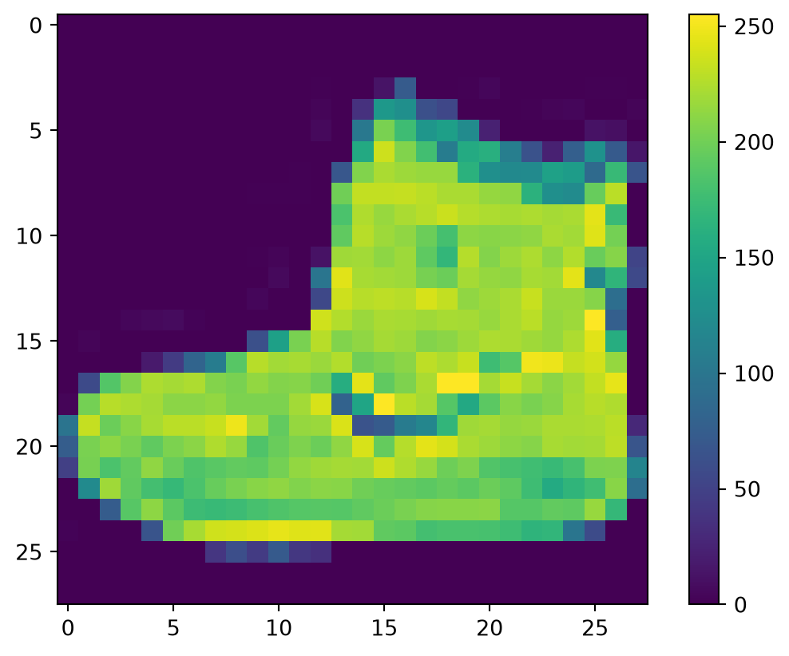
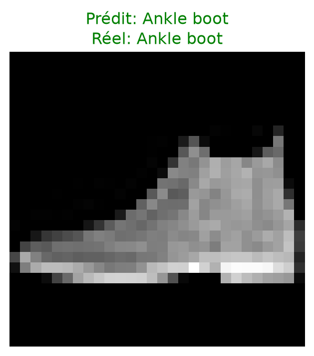

<!DOCTYPE html>
<html xmlns="http://www.w3.org/1999/xhtml" lang="en" xml:lang="en"><head>

<meta charset="utf-8">
<meta name="generator" content="quarto-1.9.38">

<meta name="viewport" content="width=device-width, initial-scale=1.0, user-scalable=yes">

<meta name="author" content="NGUYEN Duc Hoang Viet">

<title>Partie 2 Dataset FMINISTs – Projet Machine Learning</title>
<style>
/* Default styles provided by pandoc.
** See https://pandoc.org/MANUAL.html#variables-for-html for config info.
*/
code{white-space: pre-wrap;}
span.smallcaps{font-variant: small-caps;}
div.columns{display: flex; gap: min(4vw, 1.5em);}
div.column{flex: auto; overflow-x: auto;}
div.hanging-indent{margin-left: 1.5em; text-indent: -1.5em;}
ul.task-list{list-style: none;}
ul.task-list li input[type="checkbox"] {
  width: 0.8em;
  margin: 0 0.8em 0.2em -1em; /* quarto-specific, see https://github.com/quarto-dev/quarto-cli/issues/4556 */ 
  vertical-align: middle;
}
/* CSS for syntax highlighting */
html { -webkit-text-size-adjust: 100%; }
pre > code.sourceCode { white-space: pre; position: relative; }
pre > code.sourceCode > span { display: inline-block; line-height: 1.25; }
pre > code.sourceCode > span:empty { height: 1.2em; }
.sourceCode { overflow: visible; }
code.sourceCode > span { color: inherit; text-decoration: inherit; }
div.sourceCode { margin: 1em 0; }
pre.sourceCode { margin: 0; }
@media screen {
div.sourceCode { overflow: auto; }
}
@media print {
pre > code.sourceCode { white-space: pre-wrap; }
pre > code.sourceCode > span { text-indent: -5em; padding-left: 5em; }
}
pre.numberSource code
  { counter-reset: source-line 0; }
pre.numberSource code > span
  { position: relative; left: -4em; counter-increment: source-line; }
pre.numberSource code > span > a:first-child::before
  { content: counter(source-line);
    position: relative; left: -1em; text-align: right; vertical-align: baseline;
    border: none; display: inline-block;
    -webkit-touch-callout: none; -webkit-user-select: none;
    -khtml-user-select: none; -moz-user-select: none;
    -ms-user-select: none; user-select: none;
    padding: 0 4px; width: 4em;
  }
pre.numberSource { margin-left: 3em;  padding-left: 4px; }
div.sourceCode
  {   }
@media screen {
pre > code.sourceCode > span > a:first-child::before { text-decoration: underline; }
}
</style>


<script src="site_libs/quarto-nav/quarto-nav.js"></script>
<script src="site_libs/quarto-nav/headroom.min.js"></script>
<script src="site_libs/clipboard/clipboard.min.js"></script>
<script src="site_libs/quarto-search/autocomplete.umd.js"></script>
<script src="site_libs/quarto-search/fuse.min.js"></script>
<script src="site_libs/quarto-search/quarto-search.js"></script>
<meta name="quarto:offset" content="./">
<script src="site_libs/quarto-html/quarto.js" type="module"></script>
<script src="site_libs/quarto-html/tabsets/tabsets.js" type="module"></script>
<script src="site_libs/quarto-html/popper.min.js"></script>
<script src="site_libs/quarto-html/tippy.umd.min.js"></script>
<script src="site_libs/quarto-html/anchor.min.js"></script>
<link href="site_libs/quarto-html/tippy.css" rel="stylesheet">
<link href="site_libs/quarto-html/quarto-syntax-highlighting-15634bcf2e68342d4ad2dfa704d543f6.css" rel="stylesheet" id="quarto-text-highlighting-styles">
<script src="site_libs/bootstrap/bootstrap.min.js"></script>
<link href="site_libs/bootstrap/bootstrap-icons.css" rel="stylesheet">
<link href="site_libs/bootstrap/bootstrap-d5d12a2c1b219e8f9ae2db285f6b22c7.min.css" rel="stylesheet" append-hash="true" id="quarto-bootstrap" data-mode="light">
<script id="quarto-search-options" type="application/json">{
  "location": "navbar",
  "copy-button": false,
  "collapse-after": 3,
  "panel-placement": "end",
  "type": "overlay",
  "limit": 50,
  "keyboard-shortcut": [
    "f",
    "/",
    "s"
  ],
  "show-item-context": false,
  "language": {
    "search-no-results-text": "No results",
    "search-matching-documents-text": "matching documents",
    "search-copy-link-title": "Copy link to search",
    "search-hide-matches-text": "Hide additional matches",
    "search-more-match-text": "more match in this document",
    "search-more-matches-text": "more matches in this document",
    "search-clear-button-title": "Clear",
    "search-text-placeholder": "",
    "search-detached-cancel-button-title": "Cancel",
    "search-submit-button-title": "Submit",
    "search-label": "Search"
  }
}</script>

  <script src="https://cdnjs.cloudflare.com/polyfill/v3/polyfill.min.js?features=es6"></script>
  <script defer="" src="https://cdn.jsdelivr.net/npm/mathjax@3/es5/tex-chtml-full.js" type="text/javascript"></script>

<script type="text/javascript">
const typesetMath = (el) => {
  if (window.MathJax) {
    // MathJax Typeset
    window.MathJax.typeset([el]);
  } else if (window.katex) {
    // KaTeX Render
    var mathElements = el.getElementsByClassName("math");
    var macros = [];
    for (var i = 0; i < mathElements.length; i++) {
      var texText = mathElements[i].firstChild;
      if (mathElements[i].tagName == "SPAN" && texText && texText.data) {
        window.katex.render(texText.data, mathElements[i], {
          displayMode: mathElements[i].classList.contains('display'),
          throwOnError: false,
          macros: macros,
          fleqn: false
        });
      }
    }
  }
}
window.Quarto = {
  typesetMath
};
</script>

<link rel="stylesheet" href="custom.css">
</head>

<body class="nav-fixed quarto-light">

<div id="quarto-search-results"></div>
  <header id="quarto-header" class="headroom fixed-top">
    <nav class="navbar navbar-expand-lg " data-bs-theme="dark">
      <div class="navbar-container container-fluid">
      <div class="navbar-brand-container mx-auto">
    <a class="navbar-brand" href="./index.html">
    <span class="navbar-title">Projet Machine Learning</span>
    </a>
  </div>
            <div id="quarto-search" class="" title="Search"></div>
          <button class="navbar-toggler" type="button" data-bs-toggle="collapse" data-bs-target="#navbarCollapse" aria-controls="navbarCollapse" role="menu" aria-expanded="false" aria-label="Toggle navigation" onclick="if (window.quartoToggleHeadroom) { window.quartoToggleHeadroom(); }">
  <span class="navbar-toggler-icon"></span>
</button>
          <div class="collapse navbar-collapse" id="navbarCollapse">
            <ul class="navbar-nav navbar-nav-scroll me-auto">
  <li class="nav-item">
    <a class="nav-link" href="./index.html"> 
<span class="menu-text">Accueil</span></a>
  </li>  
  <li class="nav-item">
    <a class="nav-link" href="./Part1.html"> 
<span class="menu-text">Partie 1</span></a>
  </li>  
  <li class="nav-item">
    <a class="nav-link active" href="./Part2.html" aria-current="page"> 
<span class="menu-text">Partie 2</span></a>
  </li>  
  <li class="nav-item">
    <a class="nav-link" href="./Part3.html"> 
<span class="menu-text">Partie 3</span></a>
  </li>  
  <li class="nav-item">
    <a class="nav-link" href="./horse_human_demo.html"> 
<span class="menu-text">Démo interactive</span></a>
  </li>  
  <li class="nav-item">
    <a class="nav-link" href="./Part4.qmd"> 
<span class="menu-text">Partie 4</span></a>
  </li>  
</ul>
            <ul class="navbar-nav navbar-nav-scroll ms-auto">
  <li class="nav-item compact">
    <a class="nav-link" href="https://github.com/ndhviet/Machine_Learning_Deep_Learning"> <i class="bi bi-github" role="img">
</i> 
<span class="menu-text"></span></a>
  </li>  
  <li class="nav-item">
    <a class="nav-link" href="https://ndhviet.github.io/"> 
<span class="menu-text">Portfolio de Viet</span></a>
  </li>  
  <li class="nav-item compact">
    <a class="nav-link" href="https://www.linkedin.com/in/hoang-viet1810/?isSelfProfile=false"> <i class="bi bi-linkedin" role="img" aria-label="LinkedIn">
</i> 
<span class="menu-text"></span></a>
  </li>  
</ul>
          </div> <!-- /navcollapse -->
            <div class="quarto-navbar-tools">
</div>
      </div> <!-- /container-fluid -->
    </nav>
</header>
<!-- content -->
<div id="quarto-content" class="quarto-container page-columns page-rows-contents page-layout-article page-navbar">
<!-- sidebar -->
<!-- margin-sidebar -->
    <div id="quarto-margin-sidebar" class="sidebar margin-sidebar">
        <nav id="TOC" role="doc-toc" class="toc-active">
    <h2 id="toc-title">Sur cette page</h2>
   
  <ul>
  <li><a href="#introduction" id="toc-introduction" class="nav-link active" data-scroll-target="#introduction"><span class="header-section-number">1</span> Introduction</a></li>
  <li><a href="#import-les-modules-et-le-dataset" id="toc-import-les-modules-et-le-dataset" class="nav-link" data-scroll-target="#import-les-modules-et-le-dataset"><span class="header-section-number">2</span> Import les modules et le dataset</a></li>
  <li><a href="#normaliser-les-données" id="toc-normaliser-les-données" class="nav-link" data-scroll-target="#normaliser-les-données"><span class="header-section-number">3</span> Normaliser les données</a></li>
  <li><a href="#model-de-la-classification" id="toc-model-de-la-classification" class="nav-link" data-scroll-target="#model-de-la-classification"><span class="header-section-number">4</span> Model de la classification</a>
  <ul class="collapse">
  <li><a href="#intitale" id="toc-intitale" class="nav-link" data-scroll-target="#intitale"><span class="header-section-number">4.1</span> Intitale</a></li>
  <li><a href="#compile" id="toc-compile" class="nav-link" data-scroll-target="#compile"><span class="header-section-number">4.2</span> Compile</a></li>
  <li><a href="#evaluation" id="toc-evaluation" class="nav-link" data-scroll-target="#evaluation"><span class="header-section-number">4.3</span> Evaluation</a></li>
  <li><a href="#tester-une-prédiction" id="toc-tester-une-prédiction" class="nav-link" data-scroll-target="#tester-une-prédiction"><span class="header-section-number">4.4</span> Tester une prédiction</a></li>
  </ul></li>
  <li><a href="#question" id="toc-question" class="nav-link" data-scroll-target="#question"><span class="header-section-number">5</span> Question</a>
  <ul class="collapse">
  <li><a href="#layer-avec-512-neurons." id="toc-layer-avec-512-neurons." class="nav-link" data-scroll-target="#layer-avec-512-neurons."><span class="header-section-number">5.1</span> Layer avec 512 neurons.</a></li>
  <li><a href="#enlever-flatten-layer" id="toc-enlever-flatten-layer" class="nav-link" data-scroll-target="#enlever-flatten-layer"><span class="header-section-number">5.2</span> Enlever Flatten() layer</a></li>
  <li><a href="#final-output-layers" id="toc-final-output-layers" class="nav-link" data-scroll-target="#final-output-layers"><span class="header-section-number">5.3</span> Final (output) layers</a></li>
  <li><a href="#ajouter-le-layer" id="toc-ajouter-le-layer" class="nav-link" data-scroll-target="#ajouter-le-layer"><span class="header-section-number">5.4</span> Ajouter le layer</a></li>
  <li><a href="#changer-le-numero-des-épochs" id="toc-changer-le-numero-des-épochs" class="nav-link" data-scroll-target="#changer-le-numero-des-épochs"><span class="header-section-number">5.5</span> Changer le numero des épochs</a></li>
  <li><a href="#si-non-normalisation-les-données" id="toc-si-non-normalisation-les-données" class="nav-link" data-scroll-target="#si-non-normalisation-les-données"><span class="header-section-number">5.6</span> Si non normalisation les données</a></li>
  </ul></li>
  <li><a href="#callbacks" id="toc-callbacks" class="nav-link" data-scroll-target="#callbacks"><span class="header-section-number">6</span> Callbacks</a></li>
  </ul>
</nav>
    </div>
<!-- main -->
<main class="content" id="quarto-document-content">

<header id="title-block-header" class="quarto-title-block default">
<div class="quarto-title">
<h1 class="title">Partie 2 Dataset FMINISTs</h1>
</div>


<div class="quarto-title-meta">

    <div>
    <div class="quarto-title-meta-heading">Author</div>
    <div class="quarto-title-meta-contents">
             <p>NGUYEN Duc Hoang Viet </p>
          </div>
  </div>
    
  
    
  </div>
  


</header>


<section id="introduction" class="level1" data-number="1">
<h1 data-number="1"><span class="header-section-number">1</span> Introduction</h1>
<p>Dans cette partie, nous allons utiliser le dataset <strong>Fashion MNIST</strong> pour prédire des vêtements grâce à un modèle de classification. Il existe un autre dataset similaire appelé <strong>MNIST</strong>, qui contient des images d’écriture manuscrite — les chiffres de 0 à 9.</p>
<p>Dans cet exercice, on va coder un classificateur pour le dataset MNIST, qui s’entraîne jusqu’à atteindre une précision (<em>accuracy</em>) de 98%, et s’arrête automatiquement dès que ce seuil est atteint. Dans les cours précédents, cette technique avait été appliquée à la perte (<em>loss</em>), mais ici on va l’utiliser avec l’accuracy à la place.</p>
<p>Le dataset Fashion MNIST est une collection d’images en niveaux de gris de 28x28 pixels représentant des vêtements. Chaque image est associée à un label, comme indiqué dans le tableau ci-dessous.</p>
<table class="caption-top table">
<thead>
<tr class="header">
<th>Label</th>
<th>Description</th>
</tr>
</thead>
<tbody>
<tr class="odd">
<td>0</td>
<td>T-shirt/top</td>
</tr>
<tr class="even">
<td>1</td>
<td>Trouser</td>
</tr>
<tr class="odd">
<td>2</td>
<td>Pullover</td>
</tr>
<tr class="even">
<td>3</td>
<td>Dress</td>
</tr>
<tr class="odd">
<td>4</td>
<td>Coat</td>
</tr>
<tr class="even">
<td>5</td>
<td>Sandal</td>
</tr>
<tr class="odd">
<td>6</td>
<td>Shirt</td>
</tr>
<tr class="even">
<td>7</td>
<td>Sneaker</td>
</tr>
<tr class="odd">
<td>8</td>
<td>Bag</td>
</tr>
<tr class="even">
<td>9</td>
<td>Ankle boot</td>
</tr>
</tbody>
</table>
<p>Ce dataset est directement disponible dans l’API <code>tf.keras.datasets</code>, et on le charge de la manière suivante :</p>
</section>
<section id="import-les-modules-et-le-dataset" class="level1" data-number="2">
<h1 data-number="2"><span class="header-section-number">2</span> Import les modules et le dataset</h1>
<div id="e4b23aaf" class="cell" data-execution_count="1">
<div class="code-copy-outer-scaffold"><div class="sourceCode cell-code" id="cb1"><pre class="sourceCode python code-with-copy"><code class="sourceCode python"><span id="cb1-1"><a href="#cb1-1" aria-hidden="true" tabindex="-1"></a><span class="im">import</span> numpy <span class="im">as</span> np</span>
<span id="cb1-2"><a href="#cb1-2" aria-hidden="true" tabindex="-1"></a><span class="im">import</span> matplotlib.pyplot <span class="im">as</span> plt</span>
<span id="cb1-3"><a href="#cb1-3" aria-hidden="true" tabindex="-1"></a><span class="im">import</span> tensorflow <span class="im">as</span> tf</span></code></pre></div><button title="Copy to Clipboard" class="code-copy-button"><i class="bi"></i></button></div>
</div>
<div id="d65daf2d" class="cell" data-execution_count="2">
<div class="code-copy-outer-scaffold"><div class="sourceCode cell-code" id="cb2"><pre class="sourceCode python code-with-copy"><code class="sourceCode python"><span id="cb2-1"><a href="#cb2-1" aria-hidden="true" tabindex="-1"></a>fmnist <span class="op">=</span> tf.keras.datasets.fashion_mnist</span></code></pre></div><button title="Copy to Clipboard" class="code-copy-button"><i class="bi"></i></button></div>
</div>
<div id="f1dd7a0e" class="cell" data-execution_count="3">
<div class="code-copy-outer-scaffold"><div class="sourceCode cell-code" id="cb3"><pre class="sourceCode python code-with-copy"><code class="sourceCode python"><span id="cb3-1"><a href="#cb3-1" aria-hidden="true" tabindex="-1"></a><span class="co"># Charger les ensembles d'entraînement et de test du dataset Fashion MNIST</span></span>
<span id="cb3-2"><a href="#cb3-2" aria-hidden="true" tabindex="-1"></a>(training_images, training_labels), (test_images, test_labels) <span class="op">=</span> fmnist.load_data()</span></code></pre></div><button title="Copy to Clipboard" class="code-copy-button"><i class="bi"></i></button></div>
</div>
<div id="4dc738c3" class="cell" data-execution_count="4">
<div class="code-copy-outer-scaffold"><div class="sourceCode cell-code" id="cb4"><pre class="sourceCode python code-with-copy"><code class="sourceCode python"><span id="cb4-1"><a href="#cb4-1" aria-hidden="true" tabindex="-1"></a><span class="bu">print</span>(<span class="st">"Training images:"</span>, training_images.shape)</span>
<span id="cb4-2"><a href="#cb4-2" aria-hidden="true" tabindex="-1"></a><span class="bu">print</span>(<span class="st">"Training labels:"</span>, training_labels.shape)</span>
<span id="cb4-3"><a href="#cb4-3" aria-hidden="true" tabindex="-1"></a><span class="bu">print</span>(<span class="st">"Test images:"</span>, test_images.shape)</span>
<span id="cb4-4"><a href="#cb4-4" aria-hidden="true" tabindex="-1"></a><span class="bu">print</span>(<span class="st">"Test labels:"</span>, test_labels.shape)</span></code></pre></div><button title="Copy to Clipboard" class="code-copy-button"><i class="bi"></i></button></div>
<div class="cell-output cell-output-stdout">
<pre><code>Training images: (60000, 28, 28)
Training labels: (60000,)
Test images: (10000, 28, 28)
Test labels: (10000,)</code></pre>
</div>
</div>
<div id="f07a9836" class="cell" data-execution_count="5">
<div class="code-copy-outer-scaffold"><div class="sourceCode cell-code" id="cb6"><pre class="sourceCode python code-with-copy"><code class="sourceCode python"><span id="cb6-1"><a href="#cb6-1" aria-hidden="true" tabindex="-1"></a><span class="co">#Visualiser un exemple</span></span>
<span id="cb6-2"><a href="#cb6-2" aria-hidden="true" tabindex="-1"></a>index <span class="op">=</span> <span class="dv">0</span> <span class="co"># mettre une valeur entre 0 et 59999 ici</span></span>
<span id="cb6-3"><a href="#cb6-3" aria-hidden="true" tabindex="-1"></a></span>
<span id="cb6-4"><a href="#cb6-4" aria-hidden="true" tabindex="-1"></a><span class="co"># Définir le nombre de caractères par ligne lors de l'affichage</span></span>
<span id="cb6-5"><a href="#cb6-5" aria-hidden="true" tabindex="-1"></a>np.set_printoptions(linewidth<span class="op">=</span><span class="dv">320</span>)</span>
<span id="cb6-6"><a href="#cb6-6" aria-hidden="true" tabindex="-1"></a></span>
<span id="cb6-7"><a href="#cb6-7" aria-hidden="true" tabindex="-1"></a><span class="co"># Afficher le label et l'image</span></span>
<span id="cb6-8"><a href="#cb6-8" aria-hidden="true" tabindex="-1"></a><span class="bu">print</span>(<span class="ss">f'LABEL: </span><span class="sc">{</span>training_labels[index]<span class="sc">}</span><span class="ss">'</span>)</span>
<span id="cb6-9"><a href="#cb6-9" aria-hidden="true" tabindex="-1"></a><span class="bu">print</span>(<span class="ss">f'</span><span class="ch">\n</span><span class="ss">IMAGE PIXEL ARRAY:</span><span class="ch">\n\n</span><span class="sc">{</span>training_images[index]<span class="sc">}</span><span class="ch">\n\n</span><span class="ss">'</span>)</span>
<span id="cb6-10"><a href="#cb6-10" aria-hidden="true" tabindex="-1"></a></span>
<span id="cb6-11"><a href="#cb6-11" aria-hidden="true" tabindex="-1"></a><span class="co"># Visualiser l'image en utilisant la colormap par défaut (viridis)</span></span>
<span id="cb6-12"><a href="#cb6-12" aria-hidden="true" tabindex="-1"></a>plt.imshow(training_images[index])</span>
<span id="cb6-13"><a href="#cb6-13" aria-hidden="true" tabindex="-1"></a>plt.colorbar()</span>
<span id="cb6-14"><a href="#cb6-14" aria-hidden="true" tabindex="-1"></a>plt.show()</span></code></pre></div><button title="Copy to Clipboard" class="code-copy-button"><i class="bi"></i></button></div>
<div class="cell-output cell-output-stdout">
<pre><code>LABEL: 9

IMAGE PIXEL ARRAY:

[[  0   0   0   0   0   0   0   0   0   0   0   0   0   0   0   0   0   0   0   0   0   0   0   0   0   0   0   0]
 [  0   0   0   0   0   0   0   0   0   0   0   0   0   0   0   0   0   0   0   0   0   0   0   0   0   0   0   0]
 [  0   0   0   0   0   0   0   0   0   0   0   0   0   0   0   0   0   0   0   0   0   0   0   0   0   0   0   0]
 [  0   0   0   0   0   0   0   0   0   0   0   0   1   0   0  13  73   0   0   1   4   0   0   0   0   1   1   0]
 [  0   0   0   0   0   0   0   0   0   0   0   0   3   0  36 136 127  62  54   0   0   0   1   3   4   0   0   3]
 [  0   0   0   0   0   0   0   0   0   0   0   0   6   0 102 204 176 134 144 123  23   0   0   0   0  12  10   0]
 [  0   0   0   0   0   0   0   0   0   0   0   0   0   0 155 236 207 178 107 156 161 109  64  23  77 130  72  15]
 [  0   0   0   0   0   0   0   0   0   0   0   1   0  69 207 223 218 216 216 163 127 121 122 146 141  88 172  66]
 [  0   0   0   0   0   0   0   0   0   1   1   1   0 200 232 232 233 229 223 223 215 213 164 127 123 196 229   0]
 [  0   0   0   0   0   0   0   0   0   0   0   0   0 183 225 216 223 228 235 227 224 222 224 221 223 245 173   0]
 [  0   0   0   0   0   0   0   0   0   0   0   0   0 193 228 218 213 198 180 212 210 211 213 223 220 243 202   0]
 [  0   0   0   0   0   0   0   0   0   1   3   0  12 219 220 212 218 192 169 227 208 218 224 212 226 197 209  52]
 [  0   0   0   0   0   0   0   0   0   0   6   0  99 244 222 220 218 203 198 221 215 213 222 220 245 119 167  56]
 [  0   0   0   0   0   0   0   0   0   4   0   0  55 236 228 230 228 240 232 213 218 223 234 217 217 209  92   0]
 [  0   0   1   4   6   7   2   0   0   0   0   0 237 226 217 223 222 219 222 221 216 223 229 215 218 255  77   0]
 [  0   3   0   0   0   0   0   0   0  62 145 204 228 207 213 221 218 208 211 218 224 223 219 215 224 244 159   0]
 [  0   0   0   0  18  44  82 107 189 228 220 222 217 226 200 205 211 230 224 234 176 188 250 248 233 238 215   0]
 [  0  57 187 208 224 221 224 208 204 214 208 209 200 159 245 193 206 223 255 255 221 234 221 211 220 232 246   0]
 [  3 202 228 224 221 211 211 214 205 205 205 220 240  80 150 255 229 221 188 154 191 210 204 209 222 228 225   0]
 [ 98 233 198 210 222 229 229 234 249 220 194 215 217 241  65  73 106 117 168 219 221 215 217 223 223 224 229  29]
 [ 75 204 212 204 193 205 211 225 216 185 197 206 198 213 240 195 227 245 239 223 218 212 209 222 220 221 230  67]
 [ 48 203 183 194 213 197 185 190 194 192 202 214 219 221 220 236 225 216 199 206 186 181 177 172 181 205 206 115]
 [  0 122 219 193 179 171 183 196 204 210 213 207 211 210 200 196 194 191 195 191 198 192 176 156 167 177 210  92]
 [  0   0  74 189 212 191 175 172 175 181 185 188 189 188 193 198 204 209 210 210 211 188 188 194 192 216 170   0]
 [  2   0   0   0  66 200 222 237 239 242 246 243 244 221 220 193 191 179 182 182 181 176 166 168  99  58   0   0]
 [  0   0   0   0   0   0   0  40  61  44  72  41  35   0   0   0   0   0   0   0   0   0   0   0   0   0   0   0]
 [  0   0   0   0   0   0   0   0   0   0   0   0   0   0   0   0   0   0   0   0   0   0   0   0   0   0   0   0]
 [  0   0   0   0   0   0   0   0   0   0   0   0   0   0   0   0   0   0   0   0   0   0   0   0   0   0   0   0]]

</code></pre>
</div>
<div class="cell-output cell-output-display">
<div>
<figure class="figure">
<p></p>
</figure>
</div>
</div>
</div>
</section>
<section id="normaliser-les-données" class="level1" data-number="3">
<h1 data-number="3"><span class="header-section-number">3</span> Normaliser les données</h1>
<p>On voit que toutes les valeurs dans le tableau de nombres sont comprises entre 0 et 255. Lorsqu’on entraîne un réseau de neurones, en particulier dans le traitement d’images, il apprendra généralement mieux, pour diverses raisons, si toutes les valeurs sont mises à l’échelle entre 0 et 1.</p>
<div id="8fd28739" class="cell" data-execution_count="6">
<div class="code-copy-outer-scaffold"><div class="sourceCode cell-code" id="cb8"><pre class="sourceCode python code-with-copy"><code class="sourceCode python"><span id="cb8-1"><a href="#cb8-1" aria-hidden="true" tabindex="-1"></a>training_images  <span class="op">=</span> training_images <span class="op">/</span> <span class="fl">255.0</span></span>
<span id="cb8-2"><a href="#cb8-2" aria-hidden="true" tabindex="-1"></a>test_images <span class="op">=</span> test_images <span class="op">/</span> <span class="fl">255.0</span></span>
<span id="cb8-3"><a href="#cb8-3" aria-hidden="true" tabindex="-1"></a><span class="co"># Check the range</span></span>
<span id="cb8-4"><a href="#cb8-4" aria-hidden="true" tabindex="-1"></a><span class="bu">print</span>(<span class="st">"Pixel range de training images:"</span>, training_images.<span class="bu">min</span>(), <span class="st">"to"</span>, training_images.<span class="bu">max</span>())</span>
<span id="cb8-5"><a href="#cb8-5" aria-hidden="true" tabindex="-1"></a><span class="bu">print</span>(<span class="st">"Pixel range de test images:"</span>, test_images.<span class="bu">min</span>(), <span class="st">"to"</span>, test_images.<span class="bu">max</span>())</span></code></pre></div><button title="Copy to Clipboard" class="code-copy-button"><i class="bi"></i></button></div>
<div class="cell-output cell-output-stdout">
<pre><code>Pixel range de training images: 0.0 to 1.0
Pixel range de test images: 0.0 to 1.0</code></pre>
</div>
</div>
</section>
<section id="model-de-la-classification" class="level1" data-number="4">
<h1 data-number="4"><span class="header-section-number">4</span> Model de la classification</h1>
<section id="intitale" class="level2" data-number="4.1">
<h2 data-number="4.1" class="anchored" data-anchor-id="intitale"><span class="header-section-number">4.1</span> Intitale</h2>
<div id="ea05cf67" class="cell" data-execution_count="7">
<div class="code-copy-outer-scaffold"><div class="sourceCode cell-code" id="cb10"><pre class="sourceCode python code-with-copy"><code class="sourceCode python"><span id="cb10-1"><a href="#cb10-1" aria-hidden="true" tabindex="-1"></a>model <span class="op">=</span> tf.keras.models.Sequential([</span>
<span id="cb10-2"><a href="#cb10-2" aria-hidden="true" tabindex="-1"></a>    tf.keras.Input(shape<span class="op">=</span>(<span class="dv">28</span>,<span class="dv">28</span>)),</span>
<span id="cb10-3"><a href="#cb10-3" aria-hidden="true" tabindex="-1"></a>    tf.keras.layers.Flatten(),</span>
<span id="cb10-4"><a href="#cb10-4" aria-hidden="true" tabindex="-1"></a>    tf.keras.layers.Dense(<span class="dv">128</span>, activation<span class="op">=</span>tf.nn.relu),</span>
<span id="cb10-5"><a href="#cb10-5" aria-hidden="true" tabindex="-1"></a>    tf.keras.layers.Dense(<span class="dv">10</span>, activation<span class="op">=</span>tf.nn.softmax)</span>
<span id="cb10-6"><a href="#cb10-6" aria-hidden="true" tabindex="-1"></a>])</span></code></pre></div><button title="Copy to Clipboard" class="code-copy-button"><i class="bi"></i></button></div>
</div>
<p><a href="https://keras.io/api/models/sequential/">Sequential</a> : définit une séquence de couches (<em>layers</em>) dans le réseau de neurones.</p>
<p><a href="https://keras.io/api/layers/reshaping_layers/flatten/">Flatten</a> : on se rappelle que plus tôt, nos images étaient une matrice de pixels 28x28 lorsqu’on les affichait. <code>Flatten</code> prend simplement ce carré et le transforme en un tableau à une dimension.</p>
<p><a href="https://keras.io/api/layers/core_layers/dense/">Dense</a> : ajoute une couche de neurones.</p>
<p>Chaque couche de neurones a besoin d’une <a href="https://keras.io/api/layers/activations/">fonction d’activation</a> pour lui indiquer quoi faire. Il existe beaucoup d’options, mais pour l’instant on va utiliser seulement celles-ci :</p>
<p><a href="https://keras.io/api/layers/activations/#relu-function">ReLU</a> signifie concrètement :</p>
<p><span class="math display">\[
f(x) =
\begin{cases}
x &amp; \text{si } x &gt; 0 \\
0 &amp; \text{sinon}
\end{cases}
\]</span></p>
<p>Autrement dit, elle ne transmet à la couche suivante du réseau que les valeurs supérieures à 0.</p>
<p><a href="https://keras.io/api/layers/activations/#softmax-function">Softmax</a> prend une liste de valeurs et les met à l’échelle de sorte que la somme de tous les éléments soit égale à 1. Lorsqu’elle est appliquée aux sorties du modèle, on peut interpréter les valeurs mises à l’échelle comme la probabilité de chaque classe. Par exemple, dans notre modèle de classification qui possède 10 unités dans la couche dense de sortie, si la valeur la plus élevée se trouve à <code>index = 4</code>, cela signifie que le modèle est le plus confiant que l’image de vêtement en entrée est un manteau (<em>coat</em>). Si elle se trouve à <code>index = 5</code>, alors il s’agit d’une sandale, et ainsi de suite. Voir le court bloc de code ci-dessous qui illustre ces concepts. On peut aussi regarder ce <a href="https://www.youtube.com/watch?v=LLux1SW--oM&amp;ab_channel=DeepLearningAI">cours</a> pour en savoir plus sur la fonction Softmax et sur la façon dont les valeurs sont calculées.</p>
</section>
<section id="compile" class="level2" data-number="4.2">
<h2 data-number="4.2" class="anchored" data-anchor-id="compile"><span class="header-section-number">4.2</span> Compile</h2>
<div id="dc501066" class="cell" data-execution_count="8">
<div class="code-copy-outer-scaffold"><div class="sourceCode cell-code" id="cb11"><pre class="sourceCode python code-with-copy"><code class="sourceCode python"><span id="cb11-1"><a href="#cb11-1" aria-hidden="true" tabindex="-1"></a>model.<span class="bu">compile</span>(optimizer <span class="op">=</span> tf.optimizers.Adam(),</span>
<span id="cb11-2"><a href="#cb11-2" aria-hidden="true" tabindex="-1"></a>              loss <span class="op">=</span> <span class="st">'sparse_categorical_crossentropy'</span>,</span>
<span id="cb11-3"><a href="#cb11-3" aria-hidden="true" tabindex="-1"></a>              metrics<span class="op">=</span>[<span class="st">'accuracy'</span>])</span>
<span id="cb11-4"><a href="#cb11-4" aria-hidden="true" tabindex="-1"></a>model.fit(training_images, training_labels, epochs<span class="op">=</span><span class="dv">5</span>, verbose<span class="op">=</span><span class="dv">2</span>)</span></code></pre></div><button title="Copy to Clipboard" class="code-copy-button"><i class="bi"></i></button></div>
<div class="cell-output cell-output-stdout">
<pre><code>Epoch 1/5
1875/1875 - 3s - 2ms/step - accuracy: 0.8225 - loss: 0.5026
Epoch 2/5
1875/1875 - 3s - 2ms/step - accuracy: 0.8644 - loss: 0.3764
Epoch 3/5
1875/1875 - 2s - 1ms/step - accuracy: 0.8772 - loss: 0.3356
Epoch 4/5
1875/1875 - 3s - 1ms/step - accuracy: 0.8864 - loss: 0.3123
Epoch 5/5
1875/1875 - 2s - 1ms/step - accuracy: 0.8912 - loss: 0.2956</code></pre>
</div>
<div class="cell-output cell-output-display" data-execution_count="8">
<pre><code>&lt;keras.src.callbacks.history.History at 0x1475dd350&gt;</code></pre>
</div>
</div>
</section>
<section id="evaluation" class="level2" data-number="4.3">
<h2 data-number="4.3" class="anchored" data-anchor-id="evaluation"><span class="header-section-number">4.3</span> Evaluation</h2>
<div id="331709ea" class="cell" data-execution_count="9">
<div class="code-copy-outer-scaffold"><div class="sourceCode cell-code" id="cb14"><pre class="sourceCode python code-with-copy"><code class="sourceCode python"><span id="cb14-1"><a href="#cb14-1" aria-hidden="true" tabindex="-1"></a>model.evaluate(test_images, test_labels)</span></code></pre></div><button title="Copy to Clipboard" class="code-copy-button"><i class="bi"></i></button></div>
<div class="cell-output cell-output-stdout">
<div class="ansi-escaped-output">
<pre><span class="ansi-bold">  1/313</span> <span class="ansi-white-fg">━━━━━━━━━━━━━━━━━━━━</span> <span class="ansi-bold">48s</span> 156ms/step - accuracy: 0.8750 - loss: 0.2410

<span class="ansi-bold"> 47/313</span> <span class="ansi-green-fg">━━━</span><span class="ansi-white-fg">━━━━━━━━━━━━━━━━━</span> <span class="ansi-bold">0s</span> 1ms/step - accuracy: 0.8797 - loss: 0.3278   

<span class="ansi-bold"> 86/313</span> <span class="ansi-green-fg">━━━━━</span><span class="ansi-white-fg">━━━━━━━━━━━━━━━</span> <span class="ansi-bold">0s</span> 1ms/step - accuracy: 0.8841 - loss: 0.3196

<span class="ansi-bold">131/313</span> <span class="ansi-green-fg">━━━━━━━━</span><span class="ansi-white-fg">━━━━━━━━━━━━</span> <span class="ansi-bold">0s</span> 1ms/step - accuracy: 0.8752 - loss: 0.3453

<span class="ansi-bold">177/313</span> <span class="ansi-green-fg">━━━━━━━━━━━</span><span class="ansi-white-fg">━━━━━━━━━</span> <span class="ansi-bold">0s</span> 1ms/step - accuracy: 0.8727 - loss: 0.3518

<span class="ansi-bold">227/313</span> <span class="ansi-green-fg">━━━━━━━━━━━━━━</span><span class="ansi-white-fg">━━━━━━</span> <span class="ansi-bold">0s</span> 1ms/step - accuracy: 0.8732 - loss: 0.3472

<span class="ansi-bold">274/313</span> <span class="ansi-green-fg">━━━━━━━━━━━━━━━━━</span><span class="ansi-white-fg">━━━</span> <span class="ansi-bold">0s</span> 1ms/step - accuracy: 0.8756 - loss: 0.3393

<span class="ansi-bold">313/313</span> <span class="ansi-green-fg">━━━━━━━━━━━━━━━━━━━━</span> <span class="ansi-bold">1s</span> 1ms/step - accuracy: 0.8757 - loss: 0.3387
</pre>
</div>
</div>
<div class="cell-output cell-output-display" data-execution_count="9">
<pre><code>[0.33868399262428284, 0.8756999969482422]</code></pre>
</div>
</div>
<div id="da609efc" class="cell" data-execution_count="10">
<div class="code-copy-outer-scaffold"><div class="sourceCode cell-code" id="cb16"><pre class="sourceCode python code-with-copy"><code class="sourceCode python"><span id="cb16-1"><a href="#cb16-1" aria-hidden="true" tabindex="-1"></a>classifications <span class="op">=</span> model.predict(test_images)</span>
<span id="cb16-2"><a href="#cb16-2" aria-hidden="true" tabindex="-1"></a></span>
<span id="cb16-3"><a href="#cb16-3" aria-hidden="true" tabindex="-1"></a><span class="bu">print</span>(classifications[<span class="dv">0</span>])</span>
<span id="cb16-4"><a href="#cb16-4" aria-hidden="true" tabindex="-1"></a><span class="bu">print</span>(test_labels[<span class="dv">0</span>])</span></code></pre></div><button title="Copy to Clipboard" class="code-copy-button"><i class="bi"></i></button></div>
<div class="cell-output cell-output-stdout">
<div class="ansi-escaped-output">
<pre><span class="ansi-bold">  1/313</span> <span class="ansi-white-fg">━━━━━━━━━━━━━━━━━━━━</span> <span class="ansi-bold">16s</span> 53ms/step

<span class="ansi-bold"> 65/313</span> <span class="ansi-green-fg">━━━━</span><span class="ansi-white-fg">━━━━━━━━━━━━━━━━</span> <span class="ansi-bold">0s</span> 784us/step

<span class="ansi-bold">137/313</span> <span class="ansi-green-fg">━━━━━━━━</span><span class="ansi-white-fg">━━━━━━━━━━━━</span> <span class="ansi-bold">0s</span> 741us/step

<span class="ansi-bold">212/313</span> <span class="ansi-green-fg">━━━━━━━━━━━━━</span><span class="ansi-white-fg">━━━━━━━</span> <span class="ansi-bold">0s</span> 716us/step

<span class="ansi-bold">287/313</span> <span class="ansi-green-fg">━━━━━━━━━━━━━━━━━━</span><span class="ansi-white-fg">━━</span> <span class="ansi-bold">0s</span> 703us/step

<span class="ansi-bold">313/313</span> <span class="ansi-green-fg">━━━━━━━━━━━━━━━━━━━━</span> <span class="ansi-bold">0s</span> 806us/step

<span class="ansi-bold">313/313</span> <span class="ansi-green-fg">━━━━━━━━━━━━━━━━━━━━</span> <span class="ansi-bold">0s</span> 863us/step

[2.7142985e-05 1.4096608e-08 8.2818883e-07 1.3383464e-08 3.5469131e-06 2.4579886e-02 8.5179154e-06 3.9983530e-02 1.3551788e-05 9.3538296e-01]

9
</pre>
</div>
</div>
</div>
<p>Le modèle est « confiant » à 99,06 % qu’il s’agit d’une <strong>Ankle boot</strong> (index 9) — et le label réel est bien <code>9</code>. Il s’agit d’une prédiction extrêmement précise et confiante.</p>
<p><strong>« Pourquoi l’output est-il une liste de nombres, et que représentent ces nombres ? »</strong></p>
<p>→ Parce que le modèle ne répond pas directement « c’est une Ankle boot », mais renvoie plutôt le degré de confiance (la probabilité) pour les 10 possibilités à la fois. Dans ce cas précis, le modèle est presque « absolument certain » (99,06 %) qu’il s’agit de la classe numéro 9 (<strong>Ankle boot</strong>), et exclut quasiment toutes les autres possibilités (probabilités proches de 0).</p>
<div id="f0a14923" class="cell" data-execution_count="11">
<div class="code-copy-outer-scaffold"><div class="sourceCode cell-code" id="cb17"><pre class="sourceCode python code-with-copy"><code class="sourceCode python"><span id="cb17-1"><a href="#cb17-1" aria-hidden="true" tabindex="-1"></a>sum2 <span class="op">=</span> classifications[<span class="dv">0</span>].<span class="bu">sum</span>()</span>
<span id="cb17-2"><a href="#cb17-2" aria-hidden="true" tabindex="-1"></a><span class="bu">print</span>(<span class="ss">f'sum of outputs: </span><span class="sc">{</span>sum2<span class="sc">}</span><span class="ss">'</span>)</span>
<span id="cb17-3"><a href="#cb17-3" aria-hidden="true" tabindex="-1"></a></span>
<span id="cb17-4"><a href="#cb17-4" aria-hidden="true" tabindex="-1"></a>prediction2 <span class="op">=</span> np.argmax(classifications[<span class="dv">0</span>])</span>
<span id="cb17-5"><a href="#cb17-5" aria-hidden="true" tabindex="-1"></a><span class="bu">print</span>(<span class="ss">f'class with highest probability: </span><span class="sc">{</span>prediction2<span class="sc">}</span><span class="ss">'</span>)</span></code></pre></div><button title="Copy to Clipboard" class="code-copy-button"><i class="bi"></i></button></div>
<div class="cell-output cell-output-stdout">
<pre><code>sum of outputs: 1.0
class with highest probability: 9</code></pre>
</div>
</div>
</section>
<section id="tester-une-prédiction" class="level2" data-number="4.4">
<h2 data-number="4.4" class="anchored" data-anchor-id="tester-une-prédiction"><span class="header-section-number">4.4</span> Tester une prédiction</h2>
<p>On va maintenant tester le modèle sur une image du jeu de test, et visualiser le résultat.</p>
<div id="2062794e" class="cell" data-execution_count="12">
<div class="code-copy-outer-scaffold"><div class="sourceCode cell-code" id="cb19"><pre class="sourceCode python code-with-copy"><code class="sourceCode python"><span id="cb19-1"><a href="#cb19-1" aria-hidden="true" tabindex="-1"></a><span class="co"># Liste des noms de classes correspondant aux labels (0 à 9)</span></span>
<span id="cb19-2"><a href="#cb19-2" aria-hidden="true" tabindex="-1"></a>class_names <span class="op">=</span> [<span class="st">'T-shirt/top'</span>, <span class="st">'Trouser'</span>, <span class="st">'Pullover'</span>, <span class="st">'Dress'</span>, <span class="st">'Coat'</span>,</span>
<span id="cb19-3"><a href="#cb19-3" aria-hidden="true" tabindex="-1"></a>               <span class="st">'Sandal'</span>, <span class="st">'Shirt'</span>, <span class="st">'Sneaker'</span>, <span class="st">'Bag'</span>, <span class="st">'Ankle boot'</span>]</span>
<span id="cb19-4"><a href="#cb19-4" aria-hidden="true" tabindex="-1"></a></span>
<span id="cb19-5"><a href="#cb19-5" aria-hidden="true" tabindex="-1"></a><span class="co"># Choisir un index à tester (entre 0 et 9999, car c'est le jeu de test)</span></span>
<span id="cb19-6"><a href="#cb19-6" aria-hidden="true" tabindex="-1"></a>index <span class="op">=</span> <span class="dv">0</span></span>
<span id="cb19-7"><a href="#cb19-7" aria-hidden="true" tabindex="-1"></a></span>
<span id="cb19-8"><a href="#cb19-8" aria-hidden="true" tabindex="-1"></a><span class="co"># Faire la prédiction pour cette image</span></span>
<span id="cb19-9"><a href="#cb19-9" aria-hidden="true" tabindex="-1"></a>predictions <span class="op">=</span> model.predict(test_images)</span>
<span id="cb19-10"><a href="#cb19-10" aria-hidden="true" tabindex="-1"></a>predicted_label <span class="op">=</span> np.argmax(predictions[index])</span>
<span id="cb19-11"><a href="#cb19-11" aria-hidden="true" tabindex="-1"></a>true_label <span class="op">=</span> test_labels[index]</span>
<span id="cb19-12"><a href="#cb19-12" aria-hidden="true" tabindex="-1"></a></span>
<span id="cb19-13"><a href="#cb19-13" aria-hidden="true" tabindex="-1"></a><span class="co"># Afficher l'image</span></span>
<span id="cb19-14"><a href="#cb19-14" aria-hidden="true" tabindex="-1"></a>plt.figure(figsize<span class="op">=</span>(<span class="dv">4</span>,<span class="dv">4</span>))</span>
<span id="cb19-15"><a href="#cb19-15" aria-hidden="true" tabindex="-1"></a>plt.imshow(test_images[index], cmap<span class="op">=</span><span class="st">'gray'</span>)</span>
<span id="cb19-16"><a href="#cb19-16" aria-hidden="true" tabindex="-1"></a>plt.axis(<span class="st">'off'</span>)</span>
<span id="cb19-17"><a href="#cb19-17" aria-hidden="true" tabindex="-1"></a></span>
<span id="cb19-18"><a href="#cb19-18" aria-hidden="true" tabindex="-1"></a><span class="co"># Titre : prédiction vs réalité, en vert si correct, en rouge si faux</span></span>
<span id="cb19-19"><a href="#cb19-19" aria-hidden="true" tabindex="-1"></a>color <span class="op">=</span> <span class="st">'green'</span> <span class="cf">if</span> predicted_label <span class="op">==</span> true_label <span class="cf">else</span> <span class="st">'red'</span></span>
<span id="cb19-20"><a href="#cb19-20" aria-hidden="true" tabindex="-1"></a>plt.title(<span class="ss">f"Prédit: </span><span class="sc">{</span>class_names[predicted_label]<span class="sc">}</span><span class="ch">\n</span><span class="ss">Réel: </span><span class="sc">{</span>class_names[true_label]<span class="sc">}</span><span class="ss">"</span>,</span>
<span id="cb19-21"><a href="#cb19-21" aria-hidden="true" tabindex="-1"></a>          color<span class="op">=</span>color)</span>
<span id="cb19-22"><a href="#cb19-22" aria-hidden="true" tabindex="-1"></a>plt.show()</span></code></pre></div><button title="Copy to Clipboard" class="code-copy-button"><i class="bi"></i></button></div>
<div class="cell-output cell-output-stdout">
<div class="ansi-escaped-output">
<pre><span class="ansi-bold">  1/313</span> <span class="ansi-white-fg">━━━━━━━━━━━━━━━━━━━━</span> <span class="ansi-bold">6s</span> 22ms/step

<span class="ansi-bold"> 59/313</span> <span class="ansi-green-fg">━━━</span><span class="ansi-white-fg">━━━━━━━━━━━━━━━━━</span> <span class="ansi-bold">0s</span> 867us/step

<span class="ansi-bold">126/313</span> <span class="ansi-green-fg">━━━━━━━━</span><span class="ansi-white-fg">━━━━━━━━━━━━</span> <span class="ansi-bold">0s</span> 803us/step

<span class="ansi-bold">198/313</span> <span class="ansi-green-fg">━━━━━━━━━━━━</span><span class="ansi-white-fg">━━━━━━━━</span> <span class="ansi-bold">0s</span> 765us/step

<span class="ansi-bold">274/313</span> <span class="ansi-green-fg">━━━━━━━━━━━━━━━━━</span><span class="ansi-white-fg">━━━</span> <span class="ansi-bold">0s</span> 736us/step

<span class="ansi-bold">313/313</span> <span class="ansi-green-fg">━━━━━━━━━━━━━━━━━━━━</span> <span class="ansi-bold">0s</span> 788us/step
</pre>
</div>
</div>
<div class="cell-output cell-output-display">
<div>
<figure class="figure">
<p></p>
</figure>
</div>
</div>
</div>
</section>
</section>
<section id="question" class="level1" data-number="5">
<h1 data-number="5"><span class="header-section-number">5</span> Question</h1>
<section id="layer-avec-512-neurons." class="level2" data-number="5.1">
<h2 data-number="5.1" class="anchored" data-anchor-id="layer-avec-512-neurons."><span class="header-section-number">5.1</span> Layer avec 512 neurons.</h2>
<div id="c8636733" class="cell" data-execution_count="13">
<div class="code-copy-outer-scaffold"><div class="sourceCode cell-code" id="cb20"><pre class="sourceCode python code-with-copy"><code class="sourceCode python"><span id="cb20-1"><a href="#cb20-1" aria-hidden="true" tabindex="-1"></a>fmnist <span class="op">=</span> tf.keras.datasets.fashion_mnist</span>
<span id="cb20-2"><a href="#cb20-2" aria-hidden="true" tabindex="-1"></a></span>
<span id="cb20-3"><a href="#cb20-3" aria-hidden="true" tabindex="-1"></a>(training_images, training_labels), (test_images, test_labels) <span class="op">=</span> fmnist.load_data()</span>
<span id="cb20-4"><a href="#cb20-4" aria-hidden="true" tabindex="-1"></a></span>
<span id="cb20-5"><a href="#cb20-5" aria-hidden="true" tabindex="-1"></a>training_images <span class="op">=</span> training_images <span class="op">/</span> <span class="fl">255.0</span></span>
<span id="cb20-6"><a href="#cb20-6" aria-hidden="true" tabindex="-1"></a>test_images <span class="op">=</span> test_images <span class="op">/</span> <span class="fl">255.0</span></span>
<span id="cb20-7"><a href="#cb20-7" aria-hidden="true" tabindex="-1"></a></span>
<span id="cb20-8"><a href="#cb20-8" aria-hidden="true" tabindex="-1"></a>model <span class="op">=</span> tf.keras.models.Sequential([</span>
<span id="cb20-9"><a href="#cb20-9" aria-hidden="true" tabindex="-1"></a>    tf.keras.Input(shape<span class="op">=</span>(<span class="dv">28</span>,<span class="dv">28</span>)),</span>
<span id="cb20-10"><a href="#cb20-10" aria-hidden="true" tabindex="-1"></a>    tf.keras.layers.Flatten(),</span>
<span id="cb20-11"><a href="#cb20-11" aria-hidden="true" tabindex="-1"></a>    tf.keras.layers.Dense(<span class="dv">512</span>, activation<span class="op">=</span>tf.nn.relu), </span>
<span id="cb20-12"><a href="#cb20-12" aria-hidden="true" tabindex="-1"></a>    tf.keras.layers.Dense(<span class="dv">10</span>, activation<span class="op">=</span>tf.nn.softmax)</span>
<span id="cb20-13"><a href="#cb20-13" aria-hidden="true" tabindex="-1"></a>])</span>
<span id="cb20-14"><a href="#cb20-14" aria-hidden="true" tabindex="-1"></a></span>
<span id="cb20-15"><a href="#cb20-15" aria-hidden="true" tabindex="-1"></a>model.<span class="bu">compile</span>(optimizer<span class="op">=</span><span class="st">'adam'</span>, loss<span class="op">=</span><span class="st">'sparse_categorical_crossentropy'</span>, metrics<span class="op">=</span>[<span class="st">'accuracy'</span>])</span>
<span id="cb20-16"><a href="#cb20-16" aria-hidden="true" tabindex="-1"></a></span>
<span id="cb20-17"><a href="#cb20-17" aria-hidden="true" tabindex="-1"></a><span class="bu">print</span>(<span class="st">"Training:</span><span class="ch">\n</span><span class="st">"</span>)</span>
<span id="cb20-18"><a href="#cb20-18" aria-hidden="true" tabindex="-1"></a>model.fit(training_images, training_labels, epochs<span class="op">=</span><span class="dv">5</span>, verbose<span class="op">=</span><span class="dv">2</span>)</span>
<span id="cb20-19"><a href="#cb20-19" aria-hidden="true" tabindex="-1"></a></span>
<span id="cb20-20"><a href="#cb20-20" aria-hidden="true" tabindex="-1"></a><span class="bu">print</span>(<span class="st">"</span><span class="ch">\n</span><span class="st">Evaluating on test set:</span><span class="ch">\n</span><span class="st">"</span>)</span>
<span id="cb20-21"><a href="#cb20-21" aria-hidden="true" tabindex="-1"></a>model.evaluate(test_images, test_labels)</span>
<span id="cb20-22"><a href="#cb20-22" aria-hidden="true" tabindex="-1"></a></span>
<span id="cb20-23"><a href="#cb20-23" aria-hidden="true" tabindex="-1"></a><span class="bu">print</span>(<span class="st">"</span><span class="ch">\n</span><span class="st">Predicting using test set:</span><span class="ch">\n</span><span class="st">"</span>)</span>
<span id="cb20-24"><a href="#cb20-24" aria-hidden="true" tabindex="-1"></a>predictions <span class="op">=</span> model.predict(test_images)</span>
<span id="cb20-25"><a href="#cb20-25" aria-hidden="true" tabindex="-1"></a></span>
<span id="cb20-26"><a href="#cb20-26" aria-hidden="true" tabindex="-1"></a><span class="bu">print</span>(<span class="ss">f"</span><span class="ch">\n</span><span class="ss">True class for first image on test set: </span><span class="sc">{</span>test_labels[<span class="dv">0</span>]<span class="sc">}</span><span class="ch">\n</span><span class="ss">Probability of each class:</span><span class="ch">\n</span><span class="sc">{</span>predictions[<span class="dv">0</span>]<span class="sc">}</span><span class="ss">"</span>)</span></code></pre></div><button title="Copy to Clipboard" class="code-copy-button"><i class="bi"></i></button></div>
<div class="cell-output cell-output-stdout">
<div class="ansi-escaped-output">
<pre>Training:


Epoch 1/5

1875/1875 - 10s - 5ms/step - accuracy: 0.8300 - loss: 0.4749

Epoch 2/5

1875/1875 - 9s - 5ms/step - accuracy: 0.8676 - loss: 0.3570

Epoch 3/5

1875/1875 - 9s - 5ms/step - accuracy: 0.8805 - loss: 0.3225

Epoch 4/5

1875/1875 - 9s - 5ms/step - accuracy: 0.8906 - loss: 0.2971

Epoch 5/5

1875/1875 - 9s - 5ms/step - accuracy: 0.8964 - loss: 0.2804


Evaluating on test set:


<span class="ansi-bold">  1/313</span> <span class="ansi-white-fg">━━━━━━━━━━━━━━━━━━━━</span> <span class="ansi-bold">37s</span> 121ms/step - accuracy: 0.8125 - loss: 0.3832

<span class="ansi-bold"> 45/313</span> <span class="ansi-green-fg">━━</span><span class="ansi-white-fg">━━━━━━━━━━━━━━━━━━</span> <span class="ansi-bold">0s</span> 1ms/step - accuracy: 0.8799 - loss: 0.3320   

<span class="ansi-bold"> 92/313</span> <span class="ansi-green-fg">━━━━━</span><span class="ansi-white-fg">━━━━━━━━━━━━━━━</span> <span class="ansi-bold">0s</span> 1ms/step - accuracy: 0.8713 - loss: 0.3408

<span class="ansi-bold">139/313</span> <span class="ansi-green-fg">━━━━━━━━</span><span class="ansi-white-fg">━━━━━━━━━━━━</span> <span class="ansi-bold">0s</span> 1ms/step - accuracy: 0.8701 - loss: 0.3510

<span class="ansi-bold">185/313</span> <span class="ansi-green-fg">━━━━━━━━━━━</span><span class="ansi-white-fg">━━━━━━━━━</span> <span class="ansi-bold">0s</span> 1ms/step - accuracy: 0.8711 - loss: 0.3584

<span class="ansi-bold">232/313</span> <span class="ansi-green-fg">━━━━━━━━━━━━━━</span><span class="ansi-white-fg">━━━━━━</span> <span class="ansi-bold">0s</span> 1ms/step - accuracy: 0.8724 - loss: 0.3524

<span class="ansi-bold">279/313</span> <span class="ansi-green-fg">━━━━━━━━━━━━━━━━━</span><span class="ansi-white-fg">━━━</span> <span class="ansi-bold">0s</span> 1ms/step - accuracy: 0.8751 - loss: 0.3452

<span class="ansi-bold">313/313</span> <span class="ansi-green-fg">━━━━━━━━━━━━━━━━━━━━</span> <span class="ansi-bold">0s</span> 1ms/step - accuracy: 0.8752 - loss: 0.3424


Predicting using test set:


<span class="ansi-bold">  1/313</span> <span class="ansi-white-fg">━━━━━━━━━━━━━━━━━━━━</span> <span class="ansi-bold">12s</span> 41ms/step

<span class="ansi-bold"> 62/313</span> <span class="ansi-green-fg">━━━</span><span class="ansi-white-fg">━━━━━━━━━━━━━━━━━</span> <span class="ansi-bold">0s</span> 820us/step

<span class="ansi-bold">124/313</span> <span class="ansi-green-fg">━━━━━━━</span><span class="ansi-white-fg">━━━━━━━━━━━━━</span> <span class="ansi-bold">0s</span> 814us/step

<span class="ansi-bold">188/313</span> <span class="ansi-green-fg">━━━━━━━━━━━━</span><span class="ansi-white-fg">━━━━━━━━</span> <span class="ansi-bold">0s</span> 806us/step

<span class="ansi-bold">251/313</span> <span class="ansi-green-fg">━━━━━━━━━━━━━━━━</span><span class="ansi-white-fg">━━━━</span> <span class="ansi-bold">0s</span> 805us/step

<span class="ansi-bold">313/313</span> <span class="ansi-green-fg">━━━━━━━━━━━━━━━━━━━━</span> <span class="ansi-bold">0s</span> 871us/step

<span class="ansi-bold">313/313</span> <span class="ansi-green-fg">━━━━━━━━━━━━━━━━━━━━</span> <span class="ansi-bold">0s</span> 916us/step


True class for first image on test set: 9

Probability of each class:

[1.4626085e-06 1.2319416e-08 6.8128547e-09 9.2461550e-10 1.0032191e-08 5.5775237e-03 4.9906340e-08 8.1046652e-03 2.5991426e-07 9.8631603e-01]
</pre>
</div>
</div>
</div>
<p><strong>Comparaison des résultats d’entraînement (Training)</strong></p>
<table class="caption-top table">
<thead>
<tr class="header">
<th></th>
<th>128 neurones (avant)</th>
<th>512 neurones (maintenant)</th>
</tr>
</thead>
<tbody>
<tr class="odd">
<td>Epoch 5 - Training accuracy</td>
<td>0.8923 (89.23%)</td>
<td>0.8948 (89.48%)</td>
</tr>
<tr class="even">
<td>Epoch 5 - Training loss</td>
<td>0.2941</td>
<td>0.2830</td>
</tr>
<tr class="odd">
<td>Temps par epoch</td>
<td>~11s</td>
<td>~10s</td>
</tr>
</tbody>
</table>
<p>→ Légère amélioration sur les données d’entraînement : l’accuracy augmente d’environ 0.5%, et la loss diminue légèrement.</p>
<p><strong>Comparaison des résultats sur le jeu de test (Evaluation)</strong></p>
<table class="caption-top table">
<thead>
<tr class="header">
<th></th>
<th>128 neurones (avant)</th>
<th>512 neurones (maintenant)</th>
</tr>
</thead>
<tbody>
<tr class="odd">
<td>Test accuracy</td>
<td>0.8755 (87.55%)</td>
<td>0.8743 (87.43%)</td>
</tr>
<tr class="even">
<td>Test loss</td>
<td>0.3474</td>
<td>0.3612</td>
</tr>
</tbody>
</table>
<p>→ C’est ici le point le plus intéressant : bien que l’accuracy sur les données d’entraînement augmente, l’accuracy sur le jeu de test diminue légèrement (de 87.1% à 86.59%) !</p>
<p><strong>Pourquoi observe-t-on cela ? — C’est le signe d’un Overfitting (surapprentissage)</strong></p>
<p>En augmentant le nombre de neurones de 128 à 512, le modèle dispose de davantage de paramètres pour « mémoriser » les données d’entraînement — il apprend de façon trop précise sur le jeu de training (accuracy de 89.6%), mais lorsqu’il rencontre de nouvelles données qu’il n’a jamais vues (le jeu de test), sa capacité de généralisation devient légèrement moins bonne (l’accuracy diminue à 86.59%).</p>
<p>Augmenter le nombre de neurones (ou ajouter des couches) donne au modèle plus de capacité pour apprendre des motifs complexes dans les données, ce qui peut parfois améliorer les performances. Cependant, cela comporte aussi un risque : plus un modèle est complexe, plus il a tendance à mémoriser les données d’entraînement au lieu d’apprendre une règle générale — c’est le phénomène de <strong>surapprentissage (overfitting)</strong>.</p>
<p>Cela illustre bien qu’ajouter des couches ou des neurones n’est pas toujours synonyme de meilleure performance : il s’agit toujours d’un compromis entre la capacité d’apprentissage du modèle et sa capacité à généraliser.</p>
</section>
<section id="enlever-flatten-layer" class="level2" data-number="5.2">
<h2 data-number="5.2" class="anchored" data-anchor-id="enlever-flatten-layer"><span class="header-section-number">5.2</span> Enlever Flatten() layer</h2>
<p>On va rencontrer une erreur liée à la <em>shape</em> (forme) des données. Règle importante : la première couche du réseau de neurones doit avoir une <em>shape</em> correspondant aux données d’entrée. Comme nos images ont une taille de 28x28 pixels (2 dimensions), si on n’utilise pas <code>Flatten()</code> pour les transformer en un tableau à une dimension (784x1), le réseau de neurones ne saura pas comment traiter ces données à 2 dimensions → cela provoque une erreur.</p>
<p><code>Flatten()</code> permet de ne pas avoir à écrire soi-même le code pour transformer la forme des données — elle « aplatit » automatiquement la matrice 28x28 en une série de 784 nombres dès que les données sont transmises au modèle.</p>
</section>
<section id="final-output-layers" class="level2" data-number="5.3">
<h2 data-number="5.3" class="anchored" data-anchor-id="final-output-layers"><span class="header-section-number">5.3</span> Final (output) layers</h2>
<p>On va rencontrer une erreur dès que le modèle rencontre une valeur qu’il n’attendait pas. Autre règle importante : le nombre de neurones dans la dernière couche doit correspondre au nombre de classes que l’on cherche à classifier. Dans notre cas, il s’agit des vêtements (10 catégories, de 0 à 9), il doit donc y avoir exactement <strong>10 neurones</strong> dans la couche finale.</p>
<div id="fc40d295" class="cell" data-execution_count="14">
<div class="code-copy-outer-scaffold"><div class="sourceCode cell-code" id="cb21"><pre class="sourceCode python code-with-copy"><code class="sourceCode python"><span id="cb21-1"><a href="#cb21-1" aria-hidden="true" tabindex="-1"></a>model <span class="op">=</span> tf.keras.models.Sequential([</span>
<span id="cb21-2"><a href="#cb21-2" aria-hidden="true" tabindex="-1"></a>    tf.keras.Input(shape<span class="op">=</span>(<span class="dv">28</span>,<span class="dv">28</span>)),</span>
<span id="cb21-3"><a href="#cb21-3" aria-hidden="true" tabindex="-1"></a>    tf.keras.layers.Flatten(),</span>
<span id="cb21-4"><a href="#cb21-4" aria-hidden="true" tabindex="-1"></a>    tf.keras.layers.Dense(<span class="dv">128</span>, activation<span class="op">=</span>tf.nn.relu),</span>
<span id="cb21-5"><a href="#cb21-5" aria-hidden="true" tabindex="-1"></a>    tf.keras.layers.Dense(<span class="dv">10</span>, activation<span class="op">=</span>tf.nn.softmax)  <span class="co"># ici units = 10</span></span>
<span id="cb21-6"><a href="#cb21-6" aria-hidden="true" tabindex="-1"></a>])</span></code></pre></div><button title="Copy to Clipboard" class="code-copy-button"><i class="bi"></i></button></div>
</div>
</section>
<section id="ajouter-le-layer" class="level2" data-number="5.4">
<h2 data-number="5.4" class="anchored" data-anchor-id="ajouter-le-layer"><span class="header-section-number">5.4</span> Ajouter le layer</h2>
<p>On va examiner l’effet de l’ajout de couches supplémentaires dans le réseau. Que se passe-t-il si on ajoute une autre couche entre celle avec 512 neurones et la couche finale avec 10 neurones ?</p>
<p><strong>Réponse</strong></p>
<p>On n’observe pas d’impact significatif — car il s’agit de données relativement simples. Pour des données beaucoup plus complexes (par exemple des images en couleur à classifier comme des fleurs, qu’on verra dans la prochaine leçon), des couches supplémentaires sont souvent nécessaires.</p>
</section>
<section id="changer-le-numero-des-épochs" class="level2" data-number="5.5">
<h2 data-number="5.5" class="anchored" data-anchor-id="changer-le-numero-des-épochs"><span class="header-section-number">5.5</span> Changer le numero des épochs</h2>
<p>On va essayer avec 15 epochs : on obtiendra probablement un modèle avec une loss bien meilleure que celui entraîné sur 5 epochs.</p>
<ul>
<li>On va essayer avec 30 epochs : on verra peut-être la valeur de la loss diminuer plus lentement, et parfois même augmenter. On verra aussi probablement que les résultats de <code>model.evaluate()</code> ne s’améliorent pas beaucoup, et peuvent même être légèrement moins bons.</li>
</ul>
<p>Il s’agit d’un effet secondaire de ce qu’on appelle le <strong>surapprentissage</strong> (<em>overfitting</em>), un phénomène qu’on étudiera plus tard et auquel il faut faire attention lors de l’entraînement d’un réseau de neurones. Cela ne sert à rien de perdre du temps à entraîner le modèle si la loss ne s’améliore plus, n’est-ce pas ! :)</p>
</section>
<section id="si-non-normalisation-les-données" class="level2" data-number="5.6">
<h2 data-number="5.6" class="anchored" data-anchor-id="si-non-normalisation-les-données"><span class="header-section-number">5.6</span> Si non normalisation les données</h2>
<div id="0b7cfb38" class="cell" data-execution_count="15">
<div class="code-copy-outer-scaffold"><div class="sourceCode cell-code" id="cb22"><pre class="sourceCode python code-with-copy"><code class="sourceCode python"><span id="cb22-1"><a href="#cb22-1" aria-hidden="true" tabindex="-1"></a>fmnist <span class="op">=</span> tf.keras.datasets.fashion_mnist</span>
<span id="cb22-2"><a href="#cb22-2" aria-hidden="true" tabindex="-1"></a></span>
<span id="cb22-3"><a href="#cb22-3" aria-hidden="true" tabindex="-1"></a>(training_images, training_labels), (test_images, test_labels) <span class="op">=</span> fmnist.load_data()</span>
<span id="cb22-4"><a href="#cb22-4" aria-hidden="true" tabindex="-1"></a></span>
<span id="cb22-5"><a href="#cb22-5" aria-hidden="true" tabindex="-1"></a>model <span class="op">=</span> tf.keras.models.Sequential([</span>
<span id="cb22-6"><a href="#cb22-6" aria-hidden="true" tabindex="-1"></a>    tf.keras.Input(shape<span class="op">=</span>(<span class="dv">28</span>,<span class="dv">28</span>)),</span>
<span id="cb22-7"><a href="#cb22-7" aria-hidden="true" tabindex="-1"></a>    tf.keras.layers.Flatten(),</span>
<span id="cb22-8"><a href="#cb22-8" aria-hidden="true" tabindex="-1"></a>    tf.keras.layers.Dense(<span class="dv">128</span>, activation<span class="op">=</span>tf.nn.relu), </span>
<span id="cb22-9"><a href="#cb22-9" aria-hidden="true" tabindex="-1"></a>    tf.keras.layers.Dense(<span class="dv">10</span>, activation<span class="op">=</span>tf.nn.softmax)</span>
<span id="cb22-10"><a href="#cb22-10" aria-hidden="true" tabindex="-1"></a>])</span>
<span id="cb22-11"><a href="#cb22-11" aria-hidden="true" tabindex="-1"></a></span>
<span id="cb22-12"><a href="#cb22-12" aria-hidden="true" tabindex="-1"></a>model.<span class="bu">compile</span>(optimizer<span class="op">=</span><span class="st">'adam'</span>, loss<span class="op">=</span><span class="st">'sparse_categorical_crossentropy'</span>, metrics<span class="op">=</span>[<span class="st">'accuracy'</span>])</span>
<span id="cb22-13"><a href="#cb22-13" aria-hidden="true" tabindex="-1"></a></span>
<span id="cb22-14"><a href="#cb22-14" aria-hidden="true" tabindex="-1"></a><span class="bu">print</span>(<span class="st">"Training:</span><span class="ch">\n</span><span class="st">"</span>)</span>
<span id="cb22-15"><a href="#cb22-15" aria-hidden="true" tabindex="-1"></a>model.fit(training_images, training_labels, epochs<span class="op">=</span><span class="dv">5</span>, verbose<span class="op">=</span><span class="dv">2</span>)</span>
<span id="cb22-16"><a href="#cb22-16" aria-hidden="true" tabindex="-1"></a></span>
<span id="cb22-17"><a href="#cb22-17" aria-hidden="true" tabindex="-1"></a><span class="bu">print</span>(<span class="st">"</span><span class="ch">\n</span><span class="st">Evaluating on test set:</span><span class="ch">\n</span><span class="st">"</span>)</span>
<span id="cb22-18"><a href="#cb22-18" aria-hidden="true" tabindex="-1"></a>model.evaluate(test_images, test_labels)</span>
<span id="cb22-19"><a href="#cb22-19" aria-hidden="true" tabindex="-1"></a></span>
<span id="cb22-20"><a href="#cb22-20" aria-hidden="true" tabindex="-1"></a><span class="bu">print</span>(<span class="st">"</span><span class="ch">\n</span><span class="st">Predicting using test set:</span><span class="ch">\n</span><span class="st">"</span>)</span>
<span id="cb22-21"><a href="#cb22-21" aria-hidden="true" tabindex="-1"></a>predictions <span class="op">=</span> model.predict(test_images)</span>
<span id="cb22-22"><a href="#cb22-22" aria-hidden="true" tabindex="-1"></a></span>
<span id="cb22-23"><a href="#cb22-23" aria-hidden="true" tabindex="-1"></a><span class="bu">print</span>(<span class="ss">f"</span><span class="ch">\n</span><span class="ss">True class for first image on test set: </span><span class="sc">{</span>test_labels[<span class="dv">0</span>]<span class="sc">}</span><span class="ch">\n</span><span class="ss">Probability of each class:</span><span class="ch">\n</span><span class="sc">{</span>predictions[<span class="dv">0</span>]<span class="sc">}</span><span class="ss">"</span>)</span></code></pre></div><button title="Copy to Clipboard" class="code-copy-button"><i class="bi"></i></button></div>
<div class="cell-output cell-output-stdout">
<div class="ansi-escaped-output">
<pre>Training:


Epoch 1/5

1875/1875 - 3s - 2ms/step - accuracy: 0.6866 - loss: 3.0997

Epoch 2/5

1875/1875 - 3s - 1ms/step - accuracy: 0.7495 - loss: 0.6941

Epoch 3/5

1875/1875 - 3s - 1ms/step - accuracy: 0.8000 - loss: 0.5692

Epoch 4/5

1875/1875 - 2s - 1ms/step - accuracy: 0.8172 - loss: 0.5388

Epoch 5/5

1875/1875 - 3s - 1ms/step - accuracy: 0.8264 - loss: 0.5223


Evaluating on test set:


<span class="ansi-bold">  1/313</span> <span class="ansi-white-fg">━━━━━━━━━━━━━━━━━━━━</span> <span class="ansi-bold">35s</span> 115ms/step - accuracy: 0.8750 - loss: 0.4225

<span class="ansi-bold"> 50/313</span> <span class="ansi-green-fg">━━━</span><span class="ansi-white-fg">━━━━━━━━━━━━━━━━━</span> <span class="ansi-bold">0s</span> 1ms/step - accuracy: 0.8306 - loss: 0.5204   

<span class="ansi-bold">102/313</span> <span class="ansi-green-fg">━━━━━━</span><span class="ansi-white-fg">━━━━━━━━━━━━━━</span> <span class="ansi-bold">0s</span> 995us/step - accuracy: 0.8278 - loss: 0.5242

<span class="ansi-bold">155/313</span> <span class="ansi-green-fg">━━━━━━━━━</span><span class="ansi-white-fg">━━━━━━━━━━━</span> <span class="ansi-bold">0s</span> 981us/step - accuracy: 0.8266 - loss: 0.5285

<span class="ansi-bold">208/313</span> <span class="ansi-green-fg">━━━━━━━━━━━━━</span><span class="ansi-white-fg">━━━━━━━</span> <span class="ansi-bold">0s</span> 973us/step - accuracy: 0.8217 - loss: 0.5490

<span class="ansi-bold">261/313</span> <span class="ansi-green-fg">━━━━━━━━━━━━━━━━</span><span class="ansi-white-fg">━━━━</span> <span class="ansi-bold">0s</span> 969us/step - accuracy: 0.8226 - loss: 0.5412

<span class="ansi-bold">313/313</span> <span class="ansi-green-fg">━━━━━━━━━━━━━━━━━━━━</span> <span class="ansi-bold">0s</span> 1ms/step - accuracy: 0.8225 - loss: 0.5439  


Predicting using test set:


<span class="ansi-bold">  1/313</span> <span class="ansi-white-fg">━━━━━━━━━━━━━━━━━━━━</span> <span class="ansi-bold">11s</span> 35ms/step

<span class="ansi-bold"> 79/313</span> <span class="ansi-green-fg">━━━━━</span><span class="ansi-white-fg">━━━━━━━━━━━━━━━</span> <span class="ansi-bold">0s</span> 641us/step

<span class="ansi-bold">161/313</span> <span class="ansi-green-fg">━━━━━━━━━━</span><span class="ansi-white-fg">━━━━━━━━━━</span> <span class="ansi-bold">0s</span> 628us/step

<span class="ansi-bold">243/313</span> <span class="ansi-green-fg">━━━━━━━━━━━━━━━</span><span class="ansi-white-fg">━━━━━</span> <span class="ansi-bold">0s</span> 622us/step

<span class="ansi-bold">313/313</span> <span class="ansi-green-fg">━━━━━━━━━━━━━━━━━━━━</span> <span class="ansi-bold">0s</span> 697us/step

<span class="ansi-bold">313/313</span> <span class="ansi-green-fg">━━━━━━━━━━━━━━━━━━━━</span> <span class="ansi-bold">0s</span> 742us/step


True class for first image on test set: 9

Probability of each class:

[8.5278170e-19 1.7626644e-14 6.0466571e-37 3.2948386e-13 2.1341206e-23 3.9038464e-02 2.5049475e-16 3.5627261e-02 6.5276005e-08 9.2533416e-01]
</pre>
</div>
</div>
</div>
<p><strong>Comparaison des résultats</strong></p>
<table class="caption-top table">
<colgroup>
<col style="width: 51%">
<col style="width: 24%">
<col style="width: 24%">
</colgroup>
<thead>
<tr class="header">
<th></th>
<th>Avec normalisation</th>
<th>Sans normalisation</th>
</tr>
</thead>
<tbody>
<tr class="odd">
<td>Valeurs des pixels</td>
<td><code>0 → 1</code></td>
<td><code>0 → 255</code></td>
</tr>
<tr class="even">
<td>Accuracy d’entraînement après 5 epochs</td>
<td><strong>89,14 %</strong></td>
<td><strong>81,81 %</strong></td>
</tr>
<tr class="odd">
<td>Accuracy sur le test</td>
<td><strong>87,04 %</strong></td>
<td><strong>82,88 %</strong></td>
</tr>
<tr class="even">
<td>Loss sur le test</td>
<td><strong>0,3597</strong></td>
<td><strong>0,5090</strong></td>
</tr>
<tr class="odd">
<td>Accuracy à l’epoch 1</td>
<td><strong>82,37 %</strong></td>
<td><strong>66,73 %</strong></td>
</tr>
<tr class="even">
<td>Loss à l’epoch 1</td>
<td><strong>0,4999</strong></td>
<td><strong>3,0243</strong></td>
</tr>
</tbody>
</table>
<p><strong>Observation</strong></p>
<p>Un point particulièrement intéressant est la différence dès la première epoch :</p>
<pre class="text"><code>Avec normalisation :
Epoch 1 → loss = 0,4999 ; accuracy = 82,37 %

Sans normalisation :
Epoch 1 → loss = 3,0243 ; accuracy = 66,73 %</code></pre>
<p>Le modèle peut toujours être entraîné <strong>sans normalisation</strong>, mais il apprend moins efficacement au début.</p>
<p><strong>Pourquoi obtient-on des résultats différents ? </strong></p>
<p>Dans le dataset <strong>Fashion-MNIST</strong>, les valeurs des pixels sont initialement comprises entre <code>0</code> et <code>255</code>.</p>
<p>Lorsque nous normalisons les données avec :</p>
<div id="adbc1713" class="cell" data-execution_count="16">
<div class="code-copy-outer-scaffold"><div class="sourceCode cell-code" id="cb24"><pre class="sourceCode python code-with-copy"><code class="sourceCode python"><span id="cb24-1"><a href="#cb24-1" aria-hidden="true" tabindex="-1"></a>training_images <span class="op">=</span> training_images <span class="op">/</span> <span class="fl">255.0</span></span>
<span id="cb24-2"><a href="#cb24-2" aria-hidden="true" tabindex="-1"></a>test_images <span class="op">=</span> test_images <span class="op">/</span> <span class="fl">255.0</span></span></code></pre></div><button title="Copy to Clipboard" class="code-copy-button"><i class="bi"></i></button></div>
</div>
<p>les valeurs des pixels sont transformées pour être comprises entre <code>0</code> et <code>1</code>.</p>
<p>Par exemple :</p>
<pre class="text"><code>pixel = 0     → 0,0
pixel = 128   → 0,502
pixel = 255   → 1,0</code></pre>
<p>La normalisation permet donc de fournir au réseau de neurones des valeurs d’entrée plus petites et homogènes. Cela facilite l’optimisation des poids et permet généralement un apprentissage plus stable et plus efficace.</p>
<p>Sans normalisation, le réseau reçoit directement des valeurs comprises entre <code>0</code> et <code>255</code>. Avec le même modèle et le même optimiseur, l’échelle des valeurs d’entrée est beaucoup plus grande, ce qui modifie la manière dont les poids sont mis à jour pendant l’entraînement.</p>
<p>Dans mon expérience, cela conduit à une accuracy plus faible après 5 epochs :</p>
<pre class="text"><code>Avec normalisation    → 87,04 % sur le test
Sans normalisation    → 82,88 % sur le test</code></pre>
<p><strong>Comparaison des prédictions</strong></p>
<p>Pour la première image du jeu de test, la vraie classe est :</p>
<pre class="text"><code>True label : 9</code></pre>
<p>Avec normalisation :</p>
<pre class="text"><code>Classe 9 → 89,73 %</code></pre>
<p>Sans normalisation :</p>
<pre class="text"><code>Classe 9 → 85,78 %</code></pre>
<p>Dans les deux cas, le modèle prédit correctement la <strong>classe 9</strong>.</p>
<p>Cependant, dans cette expérience, le modèle entraîné avec des données normalisées donne une probabilité plus élevée pour la bonne classe :</p>
<pre class="text"><code>89,73 % contre 85,78 %</code></pre>
<p><strong>Conclusion</strong></p>
<p>La normalisation des données n’est pas obligatoire pour que le modèle puisse apprendre, comme le montre l’expérience sans normalisation. Cependant, dans cette expérience sur <strong>Fashion-MNIST</strong>, la normalisation des pixels de <code>0–255</code> vers <code>0–1</code> permet d’obtenir un apprentissage plus efficace et une meilleure accuracy sur le jeu de test après 5 epochs.</p>
</section>
</section>
<section id="callbacks" class="level1" data-number="6">
<h1 data-number="6"><span class="header-section-number">6</span> Callbacks</h1>
<p>On peut constater qu’après plusieurs epochs, l’accuracy atteint un niveau élevé et varie peu, tandis que la loss continue progressivement à diminuer. Dans ce cas, nous pouvons utiliser une fonction de <strong>callback</strong>, comme <code>EarlyStopping</code>, pour arrêter automatiquement l’entraînement lorsque le modèle n’améliore plus suffisamment ses performances. Cela permet d’éviter des epochs inutiles et de <strong>réduire le temps d’entraînement</strong>.</p>
<div id="168cdc9b" class="cell" data-execution_count="17">
<div class="code-copy-outer-scaffold"><div class="sourceCode cell-code" id="cb31"><pre class="sourceCode python code-with-copy"><code class="sourceCode python"><span id="cb31-1"><a href="#cb31-1" aria-hidden="true" tabindex="-1"></a><span class="kw">class</span> myCallback(tf.keras.callbacks.Callback):</span>
<span id="cb31-2"><a href="#cb31-2" aria-hidden="true" tabindex="-1"></a>    <span class="kw">def</span> on_epoch_end(<span class="va">self</span>, epoch, logs<span class="op">=</span>{}):</span>
<span id="cb31-3"><a href="#cb31-3" aria-hidden="true" tabindex="-1"></a>        <span class="cf">if</span>(logs.get(<span class="st">'accuracy'</span>) <span class="op">&gt;=</span> <span class="fl">0.89</span>): </span>
<span id="cb31-4"><a href="#cb31-4" aria-hidden="true" tabindex="-1"></a>            <span class="bu">print</span>(<span class="st">"</span><span class="ch">\n</span><span class="st">Reached 89% accuracy so cancelling training!"</span>)</span>
<span id="cb31-5"><a href="#cb31-5" aria-hidden="true" tabindex="-1"></a>            <span class="va">self</span>.model.stop_training <span class="op">=</span> <span class="va">True</span></span>
<span id="cb31-6"><a href="#cb31-6" aria-hidden="true" tabindex="-1"></a></span>
<span id="cb31-7"><a href="#cb31-7" aria-hidden="true" tabindex="-1"></a>callbacks <span class="op">=</span> myCallback()</span>
<span id="cb31-8"><a href="#cb31-8" aria-hidden="true" tabindex="-1"></a></span>
<span id="cb31-9"><a href="#cb31-9" aria-hidden="true" tabindex="-1"></a>fmnist <span class="op">=</span> tf.keras.datasets.fashion_mnist</span>
<span id="cb31-10"><a href="#cb31-10" aria-hidden="true" tabindex="-1"></a>(training_images, training_labels), (test_images, test_labels) <span class="op">=</span> fmnist.load_data()</span>
<span id="cb31-11"><a href="#cb31-11" aria-hidden="true" tabindex="-1"></a></span>
<span id="cb31-12"><a href="#cb31-12" aria-hidden="true" tabindex="-1"></a>training_images<span class="op">=</span>training_images <span class="op">/</span> <span class="fl">255.0</span></span>
<span id="cb31-13"><a href="#cb31-13" aria-hidden="true" tabindex="-1"></a>test_images<span class="op">=</span>test_images <span class="op">/</span> <span class="fl">255.0</span></span>
<span id="cb31-14"><a href="#cb31-14" aria-hidden="true" tabindex="-1"></a></span>
<span id="cb31-15"><a href="#cb31-15" aria-hidden="true" tabindex="-1"></a>model <span class="op">=</span> tf.keras.models.Sequential([</span>
<span id="cb31-16"><a href="#cb31-16" aria-hidden="true" tabindex="-1"></a>    tf.keras.Input(shape<span class="op">=</span>(<span class="dv">28</span>,<span class="dv">28</span>)),</span>
<span id="cb31-17"><a href="#cb31-17" aria-hidden="true" tabindex="-1"></a>    tf.keras.layers.Flatten(),</span>
<span id="cb31-18"><a href="#cb31-18" aria-hidden="true" tabindex="-1"></a>    tf.keras.layers.Dense(<span class="dv">512</span>, activation<span class="op">=</span>tf.nn.relu),</span>
<span id="cb31-19"><a href="#cb31-19" aria-hidden="true" tabindex="-1"></a>    tf.keras.layers.Dense(<span class="dv">10</span>, activation<span class="op">=</span>tf.nn.softmax)</span>
<span id="cb31-20"><a href="#cb31-20" aria-hidden="true" tabindex="-1"></a>])</span>
<span id="cb31-21"><a href="#cb31-21" aria-hidden="true" tabindex="-1"></a></span>
<span id="cb31-22"><a href="#cb31-22" aria-hidden="true" tabindex="-1"></a>model.<span class="bu">compile</span>(optimizer<span class="op">=</span><span class="st">'adam'</span>, loss<span class="op">=</span><span class="st">'sparse_categorical_crossentropy'</span>, metrics<span class="op">=</span>[<span class="st">'accuracy'</span>])</span>
<span id="cb31-23"><a href="#cb31-23" aria-hidden="true" tabindex="-1"></a>model.fit(training_images, training_labels, epochs<span class="op">=</span><span class="dv">5</span>, callbacks<span class="op">=</span>[callbacks], verbose<span class="op">=</span><span class="dv">2</span>)</span></code></pre></div><button title="Copy to Clipboard" class="code-copy-button"><i class="bi"></i></button></div>
<div class="cell-output cell-output-stdout">
<pre><code>Epoch 1/5
1875/1875 - 10s - 5ms/step - accuracy: 0.8325 - loss: 0.4743
Epoch 2/5
1875/1875 - 9s - 5ms/step - accuracy: 0.8700 - loss: 0.3578
Epoch 3/5
1875/1875 - 11s - 6ms/step - accuracy: 0.8808 - loss: 0.3222
Epoch 4/5

Reached 89% accuracy so cancelling training!
1875/1875 - 10s - 5ms/step - accuracy: 0.8901 - loss: 0.2985</code></pre>
</div>
<div class="cell-output cell-output-display" data-execution_count="17">
<pre><code>&lt;keras.src.callbacks.history.History at 0x148325710&gt;</code></pre>
</div>
</div>


</section>

</main> <!-- /main -->
<div id="preloader">
    <div class="loader-content">
        <div class="loader-center-group">
            <div class="spinner"></div> 

            <div class="loader-letter-container">
                <span class="loader-letter">V</span>
            </div>
        </div>
        
        <h2 class="loader-text">MADE BY NGUYEN DUC HOANG VIET</h2>
        <p class="loader-subtext"> PROJET Machine Leaning  </p>
    </div>
</div>

<script>
    // Giữ nguyên đoạn script
    window.addEventListener('load', function () {
        const preloader = document.getElementById('preloader');
        setTimeout(function() {
            preloader.classList.add('fade-out');
        }, 350); //1200
    });
</script>
<div style="text-align:center; font-size:0.85em; color:#888; padding:25px;">
  <strong>© 2026 NGUYEN Duc Hoang Viet — Tous droits réservés.</strong><br>
  <strong>M1 Université de Lille — Projet Machine Learning <strong><br>
  Toute reproduction, diffusion ou utilisation sans autorisation est interdite.
</strong></strong></div><strong><strong>
<script id="quarto-html-after-body" type="application/javascript">
  window.document.addEventListener("DOMContentLoaded", function (event) {
    const icon = "";
    const anchorJS = new window.AnchorJS();
    anchorJS.options = {
      placement: 'right',
      icon: icon
    };
    anchorJS.add('.anchored');
    const isCodeAnnotation = (el) => {
      for (const clz of el.classList) {
        if (clz.startsWith('code-annotation-')) {                     
          return true;
        }
      }
      return false;
    }
    const onCopySuccess = function(e) {
      // button target
      const button = e.trigger;
      // don't keep focus
      button.blur();
      // flash "checked"
      button.classList.add('code-copy-button-checked');
      var currentTitle = button.getAttribute("title");
      button.setAttribute("title", "Copied!");
      let tooltip;
      if (window.bootstrap) {
        button.setAttribute("data-bs-toggle", "tooltip");
        button.setAttribute("data-bs-placement", "left");
        button.setAttribute("data-bs-title", "Copied!");
        tooltip = new bootstrap.Tooltip(button, 
          { trigger: "manual", 
            customClass: "code-copy-button-tooltip",
            offset: [0, -8]});
        tooltip.show();    
      }
      setTimeout(function() {
        if (tooltip) {
          tooltip.hide();
          button.removeAttribute("data-bs-title");
          button.removeAttribute("data-bs-toggle");
          button.removeAttribute("data-bs-placement");
        }
        button.setAttribute("title", currentTitle);
        button.classList.remove('code-copy-button-checked');
      }, 1000);
      // clear code selection
      e.clearSelection();
    }
    const getTextToCopy = function(trigger) {
      const outerScaffold = trigger.parentElement.cloneNode(true);
      const codeEl = outerScaffold.querySelector('code');
      for (const childEl of codeEl.children) {
        if (isCodeAnnotation(childEl)) {
          childEl.remove();
        }
      }
      return codeEl.innerText;
    }
    const clipboard = new window.ClipboardJS('.code-copy-button:not([data-in-quarto-modal])', {
      text: getTextToCopy
    });
    clipboard.on('success', onCopySuccess);
    if (window.document.getElementById('quarto-embedded-source-code-modal')) {
      const clipboardModal = new window.ClipboardJS('.code-copy-button[data-in-quarto-modal]', {
        text: getTextToCopy,
        container: window.document.getElementById('quarto-embedded-source-code-modal')
      });
      clipboardModal.on('success', onCopySuccess);
    }
      var localhostRegex = new RegExp(/^(?:http|https):\/\/localhost\:?[0-9]*\//);
      var mailtoRegex = new RegExp(/^mailto:/);
        var filterRegex = new RegExp('/' + window.location.host + '/');
      var isInternal = (href) => {
          return filterRegex.test(href) || localhostRegex.test(href) || mailtoRegex.test(href);
      }
      // Inspect non-navigation links and adorn them if external
     var links = window.document.querySelectorAll('a[href]:not(.nav-link):not(.navbar-brand):not(.toc-action):not(.sidebar-link):not(.sidebar-item-toggle):not(.pagination-link):not(.no-external):not([aria-hidden]):not(.dropdown-item):not(.quarto-navigation-tool):not(.about-link)');
      for (var i=0; i<links.length; i++) {
        const link = links[i];
        if (!isInternal(link.href)) {
          // undo the damage that might have been done by quarto-nav.js in the case of
          // links that we want to consider external
          if (link.dataset.originalHref !== undefined) {
            link.href = link.dataset.originalHref;
          }
        }
      }
    function tippyHover(el, contentFn, onTriggerFn, onUntriggerFn) {
      const config = {
        allowHTML: true,
        maxWidth: 500,
        delay: 100,
        arrow: false,
        appendTo: function(el) {
            return el.parentElement;
        },
        interactive: true,
        interactiveBorder: 10,
        theme: 'quarto',
        placement: 'bottom-start',
      };
      if (contentFn) {
        config.content = contentFn;
      }
      if (onTriggerFn) {
        config.onTrigger = onTriggerFn;
      }
      if (onUntriggerFn) {
        config.onUntrigger = onUntriggerFn;
      }
      window.tippy(el, config); 
    }
    const noterefs = window.document.querySelectorAll('a[role="doc-noteref"]');
    for (var i=0; i<noterefs.length; i++) {
      const ref = noterefs[i];
      tippyHover(ref, function() {
        // use id or data attribute instead here
        let href = ref.getAttribute('data-footnote-href') || ref.getAttribute('href');
        try { href = new URL(href).hash; } catch {}
        const id = href.replace(/^#\/?/, "");
        const note = window.document.getElementById(id);
        if (note) {
          return note.innerHTML;
        } else {
          return "";
        }
      });
    }
    const xrefs = window.document.querySelectorAll('a.quarto-xref');
    const processXRef = (id, note) => {
      // Strip column container classes
      const stripColumnClz = (el) => {
        el.classList.remove("page-full", "page-columns");
        if (el.children) {
          for (const child of el.children) {
            stripColumnClz(child);
          }
        }
      }
      stripColumnClz(note)
      if (id === null || id.startsWith('sec-')) {
        // Special case sections, only their first couple elements
        const container = document.createElement("div");
        if (note.children && note.children.length > 2) {
          container.appendChild(note.children[0].cloneNode(true));
          for (let i = 1; i < note.children.length; i++) {
            const child = note.children[i];
            if (child.tagName === "P" && child.innerText === "") {
              continue;
            } else {
              container.appendChild(child.cloneNode(true));
              break;
            }
          }
          if (window.Quarto?.typesetMath) {
            window.Quarto.typesetMath(container);
          }
          return container.innerHTML
        } else {
          if (window.Quarto?.typesetMath) {
            window.Quarto.typesetMath(note);
          }
          return note.innerHTML;
        }
      } else {
        // Remove any anchor links if they are present
        const anchorLink = note.querySelector('a.anchorjs-link');
        if (anchorLink) {
          anchorLink.remove();
        }
        if (window.Quarto?.typesetMath) {
          window.Quarto.typesetMath(note);
        }
        if (note.classList.contains("callout")) {
          return note.outerHTML;
        } else {
          return note.innerHTML;
        }
      }
    }
    for (var i=0; i<xrefs.length; i++) {
      const xref = xrefs[i];
      tippyHover(xref, undefined, function(instance) {
        instance.disable();
        let url = xref.getAttribute('href');
        let hash = undefined; 
        if (url.startsWith('#')) {
          hash = url;
        } else {
          try { hash = new URL(url).hash; } catch {}
        }
        if (hash) {
          const id = hash.replace(/^#\/?/, "");
          const note = window.document.getElementById(id);
          if (note !== null) {
            try {
              const html = processXRef(id, note.cloneNode(true));
              instance.setContent(html);
            } finally {
              instance.enable();
              instance.show();
            }
          } else {
            // See if we can fetch this
            fetch(url.split('#')[0])
            .then(res => res.text())
            .then(html => {
              const parser = new DOMParser();
              const htmlDoc = parser.parseFromString(html, "text/html");
              const note = htmlDoc.getElementById(id);
              if (note !== null) {
                const html = processXRef(id, note);
                instance.setContent(html);
              } 
            }).finally(() => {
              instance.enable();
              instance.show();
            });
          }
        } else {
          // See if we can fetch a full url (with no hash to target)
          // This is a special case and we should probably do some content thinning / targeting
          fetch(url)
          .then(res => res.text())
          .then(html => {
            const parser = new DOMParser();
            const htmlDoc = parser.parseFromString(html, "text/html");
            const note = htmlDoc.querySelector('main.content');
            if (note !== null) {
              // This should only happen for chapter cross references
              // (since there is no id in the URL)
              // remove the first header
              if (note.children.length > 0 && note.children[0].tagName === "HEADER") {
                note.children[0].remove();
              }
              const html = processXRef(null, note);
              instance.setContent(html);
            } 
          }).finally(() => {
            instance.enable();
            instance.show();
          });
        }
      }, function(instance) {
      });
    }
        let selectedAnnoteEl;
        const selectorForAnnotation = ( cell, annotation) => {
          let cellAttr = 'data-code-cell="' + cell + '"';
          let lineAttr = 'data-code-annotation="' +  annotation + '"';
          const selector = 'span[' + cellAttr + '][' + lineAttr + ']';
          return selector;
        }
        const selectCodeLines = (annoteEl) => {
          const doc = window.document;
          const targetCell = annoteEl.getAttribute("data-target-cell");
          const targetAnnotation = annoteEl.getAttribute("data-target-annotation");
          const annoteSpan = window.document.querySelector(selectorForAnnotation(targetCell, targetAnnotation));
          const lines = annoteSpan.getAttribute("data-code-lines").split(",");
          const lineIds = lines.map((line) => {
            return targetCell + "-" + line;
          })
          let top = null;
          let height = null;
          let parent = null;
          if (lineIds.length > 0) {
              //compute the position of the single el (top and bottom and make a div)
              const el = window.document.getElementById(lineIds[0]);
              top = el.offsetTop;
              height = el.offsetHeight;
              parent = el.parentElement.parentElement;
            if (lineIds.length > 1) {
              const lastEl = window.document.getElementById(lineIds[lineIds.length - 1]);
              const bottom = lastEl.offsetTop + lastEl.offsetHeight;
              height = bottom - top;
            }
            if (top !== null && height !== null && parent !== null) {
              // cook up a div (if necessary) and position it 
              let div = window.document.getElementById("code-annotation-line-highlight");
              if (div === null) {
                div = window.document.createElement("div");
                div.setAttribute("id", "code-annotation-line-highlight");
                div.style.position = 'absolute';
                parent.appendChild(div);
              }
              div.style.top = top - 2 + "px";
              div.style.height = height + 4 + "px";
              div.style.left = 0;
              let gutterDiv = window.document.getElementById("code-annotation-line-highlight-gutter");
              if (gutterDiv === null) {
                gutterDiv = window.document.createElement("div");
                gutterDiv.setAttribute("id", "code-annotation-line-highlight-gutter");
                gutterDiv.style.position = 'absolute';
                const codeCell = window.document.getElementById(targetCell);
                const gutter = codeCell.querySelector('.code-annotation-gutter');
                gutter.appendChild(gutterDiv);
              }
              gutterDiv.style.top = top - 2 + "px";
              gutterDiv.style.height = height + 4 + "px";
            }
            selectedAnnoteEl = annoteEl;
          }
        };
        const unselectCodeLines = () => {
          const elementsIds = ["code-annotation-line-highlight", "code-annotation-line-highlight-gutter"];
          elementsIds.forEach((elId) => {
            const div = window.document.getElementById(elId);
            if (div) {
              div.remove();
            }
          });
          selectedAnnoteEl = undefined;
        };
          // Handle positioning of the toggle
      window.addEventListener(
        "resize",
        throttle(() => {
          elRect = undefined;
          if (selectedAnnoteEl) {
            selectCodeLines(selectedAnnoteEl);
          }
        }, 10)
      );
      function throttle(fn, ms) {
      let throttle = false;
      let timer;
        return (...args) => {
          if(!throttle) { // first call gets through
              fn.apply(this, args);
              throttle = true;
          } else { // all the others get throttled
              if(timer) clearTimeout(timer); // cancel #2
              timer = setTimeout(() => {
                fn.apply(this, args);
                timer = throttle = false;
              }, ms);
          }
        };
      }
        // Attach click handler to the DT
        const annoteDls = window.document.querySelectorAll('dt[data-target-cell]');
        for (const annoteDlNode of annoteDls) {
          annoteDlNode.addEventListener('click', (event) => {
            const clickedEl = event.target;
            if (clickedEl !== selectedAnnoteEl) {
              unselectCodeLines();
              const activeEl = window.document.querySelector('dt[data-target-cell].code-annotation-active');
              if (activeEl) {
                activeEl.classList.remove('code-annotation-active');
              }
              selectCodeLines(clickedEl);
              clickedEl.classList.add('code-annotation-active');
            } else {
              // Unselect the line
              unselectCodeLines();
              clickedEl.classList.remove('code-annotation-active');
            }
          });
        }
    const findCites = (el) => {
      const parentEl = el.parentElement;
      if (parentEl) {
        const cites = parentEl.dataset.cites;
        if (cites) {
          return {
            el,
            cites: cites.split(' ')
          };
        } else {
          return findCites(el.parentElement)
        }
      } else {
        return undefined;
      }
    };
    var bibliorefs = window.document.querySelectorAll('a[role="doc-biblioref"]');
    for (var i=0; i<bibliorefs.length; i++) {
      const ref = bibliorefs[i];
      const citeInfo = findCites(ref);
      if (citeInfo) {
        tippyHover(citeInfo.el, function() {
          var popup = window.document.createElement('div');
          citeInfo.cites.forEach(function(cite) {
            var citeDiv = window.document.createElement('div');
            citeDiv.classList.add('hanging-indent');
            citeDiv.classList.add('csl-entry');
            var biblioDiv = window.document.getElementById('ref-' + cite);
            if (biblioDiv) {
              citeDiv.innerHTML = biblioDiv.innerHTML;
            }
            popup.appendChild(citeDiv);
          });
          return popup.innerHTML;
        });
      }
    }
  });
  </script>
</strong></strong></div><strong><strong> <!-- /content -->


</strong></strong></body></html>